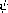

1.2 Procedures and the Processes They Generate
1.2 手続きと、手続きが生成するプロセス
We have now considered the elements of programming: We have used primitive arithmetic operations, we have combined these operations, and we have abstracted these composite operations by defining them as compound procedures. But that is not enough to enable us to say that we know how to program. Our situation is analogous to that of someone who has learned the rules for how the pieces move in chess but knows nothing of typical openings, tactics, or strategy. Like the novice chess player, we don't yet know the common patterns of usage in the domain. We lack the knowledge of which moves are worth making (which procedures are worth defining). We lack the experience to predict the consequences of making a move (executing a procedure).
今や私たちは、プログラミングの諸要素について熟考したところである——原始的な算術演算を使ったし、これらの演算を結合したし、これらの合成演算を複合的手続きとして定義することにより、これらの合成演算を抽象化した。 しかし、それだけでは、どうやってプログラムを書くのかを自分は知っている、と言えるようになるのに十分ではない。 私たちの状況は、チェスの駒の動き方の規則を学んだけれども典型的な開始手や作戦や戦略については少しも知らない、という人の状況と似ている。 新米のチェス・プレイヤと同様、私たちはまだ当該分野での使用法のよくあるパタンについて知らない。 行うに足る価値を持つのは、どの動きなのか (定義するに足る価値を持つのは、どの手続きなのか)、ということについての知識が、私たちには欠けている。 駒を動かすこと (手続きを実行すること) の結果を予測するための経験が、私たちには欠けている。
The ability to visualize the consequences of the actions under consideration is crucial to becoming an expert programmer, just as it is in any synthetic, creative activity. In becoming an expert photographer, for example, one must learn how to look at a scene and know how dark each region will appear on a print for each possible choice of exposure and development conditions. Only then can one reason backward, planning framing, lighting, exposure, and development to obtain the desired effects. So it is with programming, where we are planning the course of action to be taken by a process and where we control the process by means of a program. To become experts, we must learn to visualize the processes generated by various types of procedures. Only after we have developed such a skill can we learn to reliably construct programs that exhibit the desired behavior.
検討中の行為の結末を思い描くことができる能力は、達人プログラマになるのには欠かせない——総合的で創造的などんな活動においても欠かせないのとちょうど同じように。 たとえば、達人写真家になる過程において、ひとは、光景の見方を習得せねばならず、露光と現像の条件についての可能な選択肢の各々に関して、個々の領域が印画紙上ではどれほど暗く見えるのかを知っていなくてはならない。 そうしてはじめて、ひとは逆算ができるようになる——つまり、所望の効果を得るために、フレーミング・照明・露光・現像を計画するわけだ。 プログラミングでも同様であり、プログラミングでは、私たちは、プロセスにより行われるはずの動作の成り行きを計画しているし、プログラムによってそのプロセスを制御している。 達人になるには、色々な種類の手続きによって生成されるプロセスを思い描くことを習得しなくてはならない。 そのような技能を高めた後になってはじめて、私たちは、所望の振る舞いを示すプログラムを期待どおりに構築することを学べる。
A procedure is a pattern for the local evolution of a computational process. It specifies how each stage of the process is built upon the previous stage. We would like to be able to make statements about the overall, or global, behavior of a process whose local evolution has been specified by a procedure. This is very difficult to do in general, but we can at least try to describe some typical patterns of process evolution.
手続きは、計算プロセスの局所的な進展のための見本である。 手続きは、そのプロセスの各段階が、前の段階の上にどのように構築されるのかを指定する。 私たちは、局所的な進展が手続きによって既に指定されたプロセスの、全体的な——つまり、大域的な——振る舞いについての陳述ができるようになりたい。 これは、一般的には行うのが難しいのだが、少なくとも、プロセス進展についての典型的ないくつかのパタンについて記述しようと試みることは、可能だ。
In this section we will examine some common ``shapes'' for processes generated by simple procedures. We will also investigate the rates at which these processes consume the important computational resources of time and space. The procedures we will consider are very simple. Their role is like that played by test patterns in photography: as oversimplified prototypical patterns, rather than practical examples in their own right.
本節では、単純な手続きによって生成されるプロセスの、ある種の共通の「形」について、吟味しよう。 これらのプロセスが、時間と空間という重要な計算資源を消費する速度についても、調査しよう。 私たちが検討する手続きは、とても単純だ。 これらの手続きの役割は、写真撮影術においてテスト・パタンが果たす役割と似ている——それ自体で実践的な例というより、むしろ、簡略化されすぎた試作品的なパタンとしての役割だ。
1.2.1 Linear Recursion and Iteration
1.2.1 線形的な再帰と反復

We begin by considering the factorial function, defined by
以下のように定義される階乗関数を検討することから始める。

There are many ways to compute factorials. One way is to make use of the observation that n! is equal to n times (n - 1)! for any positive integer n:
階乗を計算するための多くの方法がある。 ひとつの方法は、任意の正整数 nに対して n! が (n − 1)! の n 倍に等しい、という知見を利用することだ。

Thus, we can compute n! by computing (n - 1)! and multiplying the result by n. If we add the stipulation that 1! is equal to 1, this observation translates directly into a procedure:
よって、 (n − 1)! を計算し、その結果を n 倍することで、 n! を計算できる。 もし、1! は 1 である、という規定を加えるなら、この知見は直接的に以下の手続きになる。
(define (factorial n) (if (= n 1) 1 (* n (factorial (- n 1)))))
We can use the substitution model of section 1.1.5 to watch this procedure in action computing 6!, as shown in figure 1.3.
動作中のこの関数が 6! を計算するのをよく見るために、1.1.5節の
Now let's take a different perspective on computing factorials. We could describe a rule for computing n! by specifying that we first multiply 1 by 2, then multiply the result by 3, then by 4, and so on until we reach n. More formally, we maintain a running product, together with a counter that counts from 1 up to n. We can describe the computation by saying that the counter and the product simultaneously change from one step to the next according to the rule
ではここで、階乗の計算について別の見方をしてみよう。 まず 1 に 2 を掛け、次にその結果に 3 を掛け、次に 4 を掛け、……というふうにして、n に到達するまで続ける、と指定することで、n! を計算するための規則を記述することができるだろう。 より形式的には、1 から n まで数えるカウンタとともに、現在の積を保持しておく。 私たちはこの計算を記述できる——ひとつのステップから次のステップへと進むたびに、以下の規則にしたがって、そのカウンタと積が同時に変化する、と述べることによって、
counter counter + 1
and stipulating that n! is the value of the product when the counter exceeds n.
そしてまた、カウンタが n を越えたときの積の値が n! なのだ、と規定することによって。
Once again, we can recast our description as a procedure for computing factorials:29
またしても私たちは、階乗を計算するための手続きとして、記述を再構成することができる29。
(define (factorial n) (fact-iter 1 1 n)) (define (fact-iter product counter max-count) (if (> counter max-count) product (fact-iter (* counter product) (+ counter 1) max-count)))
As before, we can use the substitution model to visualize the process of computing 6!, as shown in figure 1.4.
前のときと同様に、6! を計算するプロセスを可視化するために
Compare the two processes. From one point of view, they seem hardly different at all. Both compute the same mathematical function on the same domain, and each requires a number of steps proportional to n to compute n!. Indeed, both processes even carry out the same sequence of multiplications, obtaining the same sequence of partial products. On the other hand, when we consider the ``shapes'' of the two processes, we find that they evolve quite differently.
二つのプロセスを比べてみよう。 一つの観点からすれば、これら二つのプロセスは、ほとんど違わないように見える。 両方とも、同じ定義域上で同じ数学的関数を計算し、各々は、n! を計算するために、n に比例する数のステップを要する。 実際、双方のプロセスは、乗算の同じ連なりを実行しさえする——そして不完全な積の同じ連なりを得ている。 他方、二つのプロセスの「形」を考慮する場合には、二つのプロセスがまったく違うやり方で進展することに気づく。
Consider the first process. The substitution model reveals a shape of expansion followed by contraction, indicated by the arrow in figure 1.3. The expansion occurs as the process builds up a chain of deferred operations (in this case, a chain of multiplications). The contraction occurs as the operations are actually performed. This type of process, characterized by a chain of deferred operations, is called a recursive process. Carrying out this process requires that the interpreter keep track of the operations to be performed later on. In the computation of n!, the length of the chain of deferred multiplications, and hence the amount of information needed to keep track of it, grows linearly with n (is proportional to n), just like the number of steps. Such a process is called a linear recursive process.
一番目のプロセスを検討しよう。
By contrast, the second process does not grow and shrink. At each step, all we need to keep track of, for any n, are the current values of the variables product, counter, and max-count. We call this an iterative process. In general, an iterative process is one whose state can be summarized by a fixed number of state variables, together with a fixed rule that describes how the state variables should be updated as the process moves from state to state and an (optional) end test that specifies conditions under which the process should terminate. In computing n!, the number of steps required grows linearly with n. Such a process is called a linear iterative process.
それに対して、二番目のプロセスは、伸びたり縮んだりはしない。 任意のnに対して、個々のステップで把握しておかなくてはならないものは、product と counter と max-count という変数の現在の値だけである。 私たちは、これを反復的プロセスと呼んでいる。 一般に、反復的プロセスとは、決められた個数の状態変数によって——それから、状態から状態へとプロセスが移り変わるにつれて状態変数をどのように更新すべきなのかを記述する所定の規則と、プロセスが終了すべき条件を指定する (オプショナルな) 終了テストと、によって——状態を要約できるようなプロセスである。 n! の計算では、必要なステップ数は、n に対して線形に増える。 こういうプロセスは、線形の反復的プロセスと呼ばれる。
The contrast between the two processes can be seen in another way. In the iterative case, the program variables provide a complete description of the state of the process at any point. If we stopped the computation between steps, all we would need to do to resume the computation is to supply the interpreter with the values of the three program variables. Not so with the recursive process. In this case there is some additional ``hidden'' information, maintained by the interpreter and not contained in the program variables, which indicates ``where the process is'' in negotiating the chain of deferred operations. The longer the chain, the more information must be maintained.30
二つのプロセスの差異について、別の見方もできる。 反復的な場合、任意の時点において、プログラム変数が、プロセスの状態の完全な記述を与えてくれる。 もし、ステップとステップの間で計算を止めたなら、計算を再開するためにしなくてはならないであろうことは、三つのプログラム変数の値をインタプリタに与えることだけだ。 再帰的プロセスでは、そうはいかない。 この場合、何らかの付加的な「隠れた」情報があり、それは、インタプリタにより保持されているがプログラム変数には含まれていないものであって、遅延された演算の連なりを切り抜けてゆく際に「プロセスがどこにいるのか」を示している。 その連なりが長いほど、多くの情報が保持されなくてはならない30。
In contrasting iteration and recursion, we must be careful not to confuse the notion of a recursive process with the notion of a recursive procedure. When we describe a procedure as recursive, we are referring to the syntactic fact that the procedure definition refers (either directly or indirectly) to the procedure itself. But when we describe a process as following a pattern that is, say, linearly recursive, we are speaking about how the process evolves, not about the syntax of how a procedure is written. It may seem disturbing that we refer to a recursive procedure such as fact-iter as generating an iterative process. However, the process really is iterative: Its state is captured completely by its three state variables, and an interpreter need keep track of only three variables in order to execute the process.
反復と再帰の対比においては、再帰的なプロセスという概念と再帰的な手続きという概念を混同しないように、気をつけなくてはならない。 ある手続きが再帰的だと述べるとき、私たちは、その手続きの定義が (直接的または間接的に) その手続き自体を参照している、という構文的事実のことを言っている。 一方、あるプロセスのことを、例えば線形の再帰的なパタンにしたがっている、と述べるとき、私たちは、そのプロセスがどのように進展するのかについて話しているのであって、手続きがどう書かれているかという構文について話しているわけではない。 fact-iter などの再帰的手続きのことを、反復的プロセスを生成するものだ、と言うことは、混乱させる言い方かもしれない。 しかし、事実、そのプロセスは反復的である——そのプロセスの状態は、三つの状態変数によって完全に捉えられるし、インタプリタは、プロセスを実行するために三つの状態変数だけを把握しておけばよいのだから。
One reason that the distinction between process and procedure may be confusing is that most implementations of common languages (including Ada, Pascal, and C) are designed in such a way that the interpretation of any recursive procedure consumes an amount of memory that grows with the number of procedure calls, even when the process described is, in principle, iterative. As a consequence, these languages can describe iterative processes only by resorting to special-purpose ``looping constructs'' such as do, repeat, until, for, and while. The implementation of Scheme we shall consider in chapter 5 does not share this defect. It will execute an iterative process in constant space, even if the iterative process is described by a recursive procedure. An implementation with this property is called tail-recursive. With a tail-recursive implementation, iteration can be expressed using the ordinary procedure call mechanism, so that special iteration constructs are useful only as syntactic sugar.31
プロセスと手続きの違いが紛らわしいかもしれない、ということの理由の一つは、こうである——記述されているプロセスが原理的には反復的であるときでさえ、どの再帰的手続きの解釈も、手続き呼び出しの回数に応じて増える量のメモリを消費してしまうような方法で、(Ada、Pascal、Cを含む) 普通の言語のほとんどの実装が、設計されているからなのだ。 その結果、これらの言語は、do や、repeat や、until や、for や、while などの、特定用途の「ループ構造」に頼ることでしか、反復的プロセスを記述できない。 5章で検討することになるSchemeの実装には、この欠点がない。 その実装は、反復的なプロセスを一定の空間内で実行するだろう——たとえ、その反復的プロセスが、再帰的手続きにより記述されていても。 このような性質を持った実装は、末尾再帰的と呼ばれる。 末尾再帰的な実装を使うと、通常の手続き呼び出しの仕組みを用いて反復を表現でき、その結果として、特殊な反復構造は糖衣構文としてのみ有用だ、ということになる31。
Exercise 1.9. Each of the following two procedures defines a method for adding two positive integers in terms of the procedures inc, which increments its argument by 1, and dec, which decrements its argument by 1.
練習問題 1.9. 以下の二つの手続きのそれぞれは、inc という手続き——引数を 1 だけ増やす——と、dec という手続き——引数を 1 だけ減らす——を使って、二つの正整数を足す方法を定義している。
(define (+ a b) (if (= a 0) b (inc (+ (dec a) b)))) (define (+ a b) (if (= a 0) b (+ (dec a) (inc b))))
Using the substitution model, illustrate the process generated by each procedure in evaluating (+ 4 5). Are these processes iterative or recursive?
(+ 4 5) を評価する際にそれぞれの手続きにより生成されるプロセスについて、
; 上の定義を使った場合は以下のようになり、再帰的。 ; (inc と dec は原始的と仮定する。 ; また、if が特殊形式であることに注意しながら展開・簡約を行う。) ; 適用順でやってみる。 (+ 4 5) (if (= 4 0) 5 (inc (+ (dec 4) 5))) (inc (+ (dec 4) 5)) (inc (+ 3 5)) (inc (if (= 3 0) 5 (inc (+ (dec 3) 5)))) (inc (inc (+ (dec 3) 5))) (inc (inc (+ 2 5))) (inc (inc (if (= 2 0) 5 (inc (+ (dec 2) 5))))) (inc (inc (inc (+ (dec 2) 5)))) (inc (inc (inc (+ 1 5)))) (inc (inc (inc (if (= 1 0) 5 (inc (+ (dec 1) 5)))))) (inc (inc (inc (inc (+ (dec 1) 5))))) (inc (inc (inc (inc (+ 0 5))))) (inc (inc (inc (inc (if (= 0 0) 5 (inc (+ (dec 0) 5))))))) (inc (inc (inc (inc 5)))) (inc (inc (inc 6))) (inc (inc 7)) (inc 8) 9
; 正規順で考えたものも、せっかくなので以下に残しておく。 (+ 4 5) (if (= 4 0) 5 (inc (+ (dec 4) 5))) (inc (+ (dec 4) 5)) (inc (if (= (dec 4) 0) 5 (inc (+ (dec (dec 4)) 5)))) (inc (inc (+ (dec (dec 4)) 5))) (inc (inc (if (= (dec (dec 4)) 0) 5 (inc (+ (dec (dec (dec 4))) 5))))) (inc (inc (inc (+ (dec (dec (dec 4))) 5)))) (inc (inc (inc (if (= (dec (dec (dec 4))) 0) 5 (inc (+ (dec (dec (dec (dec 4)))) 5)))))) (inc (inc (inc (inc (+ (dec (dec (dec (dec 4)))) 5))))) (inc (inc (inc (inc (if (= (dec (dec (dec (dec 4)))) 0) 5 (inc (+ (dec (dec (dec (dec (dec 4))))) 5))))))) (inc (inc (inc (inc 5)))) (inc (inc (inc 6))) (inc (inc 7)) (inc 8) 9
; 下の定義を使った場合は以下のようになり、反復的。 ; 適用順 (+ 4 5) (if (= 4 0) 5 (+ (dec 4) (inc 5))) (+ (dec 4) (inc 5)) (+ 3 6) (if (= 3 0) 6 (+ (dec 3) (inc 6))) (+ (dec 3) (inc 6)) (+ 2 7) (if (= 2 0) 7 (+ (dec 2) (inc 7))) (+ (dec 2) (inc 7)) (+ 1 8) (if (= 1 0) 8 (+ (dec 1) (inc 8))) (+ (dec 1) (inc 8)) (+ 0 9) (if (= 0 0) 9 (+ (dec 0) (inc 9))) 9
; 正規順のも書いておく。これも反復的。 (+ 4 5) (if (= 4 0) 5 (+ (dec 4) (inc 5))) (+ (dec 4) (inc 5)) (if (= (dec 4) 0) (inc 5) (+ (dec (dec 4)) (inc (inc 5)))) (+ (dec (dec 4)) (inc (inc 5))) (if (= (dec (dec 4)) 0) (inc (inc 5)) (+ (dec (dec (dec 4))) (inc (inc (inc 5))))) (+ (dec (dec (dec 4))) (inc (inc (inc 5)))) (if (= (dec (dec (dec 4))) 0) (inc (inc (inc 5))) (+ (dec (dec (dec (dec 4)))) (inc (inc (inc (inc 5)))))) (+ (dec (dec (dec (dec 4)))) (inc (inc (inc (inc 5)))))) (if (= (dec (dec (dec (dec 4)))) 0) (inc (inc (inc (inc 5)))) (+ (dec (dec (dec (dec (dec 4))))) (inc (inc (inc (inc (inc 5))))))) (inc (inc (inc (inc 5)))) (inc (inc (inc 6))) (inc (inc 7)) (inc 8) 9
Exercise 1.10. The following procedure computes a mathematical function called Ackermann's function.
練習問題 1.10. 以下の手続きは、アッカーマン関数と呼ばれる数学的関数を計算する。
(define (A x y) (cond ((= y 0) 0) ((= x 0) (* 2 y)) ((= y 1) 2) (else (A (- x 1) (A x (- y 1))))))
What are the values of the following expressions?
以下の式の値はいくつか？
(A 1 10) (A 2 4) (A 3 3)
(A 1 10) (A 0 (A 1 9)) (A 0 (A 0 (A 1 8))) (A 0 (A 0 (A 0 (A 1 7)))) (A 0 (A 0 (A 0 (A 0 (A 1 6))))) (A 0 (A 0 (A 0 (A 0 (A 0 (A 1 5)))))) (A 0 (A 0 (A 0 (A 0 (A 0 (A 0 (A 1 4))))))) (A 0 (A 0 (A 0 (A 0 (A 0 (A 0 (A 0 (A 1 3)))))))) (A 0 (A 0 (A 0 (A 0 (A 0 (A 0 (A 0 (A 0 (A 1 2))))))))) (A 0 (A 0 (A 0 (A 0 (A 0 (A 0 (A 0 (A 0 (A 0 (A 1 1)))))))))) (A 0 (A 0 (A 0 (A 0 (A 0 (A 0 (A 0 (A 0 (A 0 2))))))))) (A 0 (A 0 (A 0 (A 0 (A 0 (A 0 (A 0 (A 0 4)))))))) (A 0 (A 0 (A 0 (A 0 (A 0 (A 0 (A 0 8))))))) (A 0 (A 0 (A 0 (A 0 (A 0 (A 0 16)))))) (A 0 (A 0 (A 0 (A 0 (A 0 32))))) (A 0 (A 0 (A 0 (A 0 64)))) (A 0 (A 0 (A 0 128))) (A 0 (A 0 256)) (A 0 512) 1024
(A 2 4) (A 1 (A 2 3)) (A 1 (A 1 (A 2 2))) (A 1 (A 1 (A 1 (A 2 1)))) (A 1 (A 1 (A 1 2))) (A 1 (A 1 (A 0 (A 1 1)))) (A 1 (A 1 (A 0 2))) (A 1 (A 1 4)) (A 1 (A 0 (A 1 3))) (A 1 (A 0 (A 0 (A 1 2)))) (A 1 (A 0 (A 0 (A 0 (A 1 1))))) (A 1 (A 0 (A 0 (A 0 2)))) (A 1 (A 0 (A 0 4))) (A 1 (A 0 8)) (A 1 16) (A 0 (A 1 15)) : : ; 上の問題の計算過程より、(A 1 n)=2nと推定できる。 : ; 後で示すようにこの推定は一般に成り立つ。 (A 0 32768) ; 215=32768 65536
(A 3 3) (A 2 (A 3 2)) (A 2 (A 2 (A 3 1))) (A 2 (A 2 2)) (A 2 (A 1 (A 2 1))) (A 2 (A 1 2)) (A 2 (A 0 (A 1 1))) (A 2 (A 0 2)) (A 2 4) ; これは直前の問題と同じ。 : : 65536
Consider the following procedures, where A is the procedure defined above:
A が、上記のように定義された手続きだとして、以下の手続きについて検討せよ。
(define (f n) (A 0 n)) (define (g n) (A 1 n)) (define (h n) (A 2 n)) (define (k n) (* 5 n n))
Give concise mathematical definitions for the functions computed by the procedures f, g, and h for positive integer values of n. For example, (k n) computes 5n2.
正の整数値 n に対して、f と g と h という手続きにより計算される関数の、簡潔な数学的定義を与えよ。 たとえば、(k n)は 5n2 を計算する。
(f n) = (A 0 n) = (* 2 n) なので、(f n) は 2n を計算する。
(g n) は 2n を計算する。と、推定できる (上記の計算例より)。 帰納法で証明しておく。 n=1 のとき、(g 1) は、定義より (A 1 1) であり、これは、2である。 2n = 21 = 2 だから、n=1 のとき、上記の推定は成立。 次に、n が 1 から j までのときに上記の推定が成立する、と仮定する。すると、 (g (+ j 1)) = (A 1 (+ j 1)) = (A 0 (A 1 j)) = (A 0 2j) = (* 2 2j) = 2j+1 なので、n=j+1 のときも上記の推定が成立する。 したがって、任意の正整数 n に対して、(g n) は 2n を計算する。
上記の計算例より、 (h 1) = (A 2 1) = 2 = 21 (h 2) = (A 2 2) = 4 = 22 (h 3) = (A 2 3) = 16 = 24 (h 4) = (A 2 4) = 65536 = 216 である。また、 (h 5) = (A 2 5) = (A 1 (A 2 4)) = (A 1 65536) = 265536 である。というわけで、(h n) は、 2 . . . 2 2 を計算するものである (ただし、ここで、累乗の累乗の……と続いてゆく2の個数は、 全部で n 個である)、と推定できる (※)。帰納法で証明しておく。 n=1のとき、(h 1) = 2 より、上記推定 (※) は成立する。 次に、n が 1 から j までのときに上記の推定 (※) が成立する、と仮定する。 (h (+ j 1)) = (A 2 (+ j 1)) = (A 1 (A 2 j)) = (g (h j)) = 2(h j) なので、n=j+1 のときも上記の推定 (※) が成立する。 したがって、任意の正整数 n に対して、上記の推定 (※) が成立する。
1.2.2 Tree Recursion
1.2.2 木構造再帰
Another common pattern of computation is called tree recursion. As an example, consider computing the sequence of Fibonacci numbers, in which each number is the sum of the preceding two:
別のよくある計算パタンは、木構造再帰と呼ばれる。 例として、フィボナッチ数の列——各々の数は、先行する二つの和である——を計算することを考えてみよう。
In general, the Fibonacci numbers can be defined by the rule
一般に、フィボナッチ数は、以下の規則により定義できる。

We can immediately translate this definition into a recursive procedure for computing Fibonacci numbers:
私たちは即座にこの定義を、フィボナッチ数を計算する再帰的手続きへと書き換えられる。
(define (fib n) (cond ((= n 0) 0) ((= n 1) 1) (else (+ (fib (- n 1)) (fib (- n 2))))))

Consider the pattern of this computation. To compute (fib 5), we compute (fib 4) and (fib 3). To compute (fib 4), we compute (fib 3) and (fib 2). In general, the evolved process looks like a tree, as shown in figure 1.5. Notice that the branches split into two at each level (except at the bottom); this reflects the fact that the fib procedure calls itself twice each time it is invoked.
この計算のパタンについて考えよう。 (fib 5) を計算するには、(fib 4) と (fib 3) を計算する。 (fib 4) を計算するには、(fib 3) と (fib 2) を計算する。 一般に、進展したプロセスは、図1.5に示すとおり、木のように見える。 各レベルで (ただし最下層を除く)、枝が二つに分かれることに注意してほしい。このことは、fib という手続きが、呼び出されるたびに自分自身を二回呼び出す、という事実を反映している。
This procedure is instructive as a prototypical tree recursion, but it
is a terrible way to compute Fibonacci numbers because it does so much
redundant computation. Notice in figure 1.5 that
the entire computation of (fib 3) -- almost half the work -- is
duplicated. In fact, it is not hard to show that the number of times
the procedure will compute (fib 1) or (fib 0) (the number
of leaves in the above tree, in general) is precisely
Fib(n + 1). To get an idea of how bad this is, one can show that the
value of Fib(n) grows exponentially with n. More precisely
(see exercise 1.13), Fib(n) is the closest
integer to  n /
n / 5, where
5, where
この手続きは、試作品的な木構造再帰としては、教育上、役立つが、非常に多くの冗長な計算を行うので、フィボナッチ数を計算するにはひどい方法である。 図1.5において、(fib 3) の計算の全体——仕事のほぼ半分だ——が繰り返されていることに注意してほしい。 実際、この手続きが (fib 1) または (fib 0) を計算するだろう回数 (一般には上記の木の中の葉の数) が、正確に Fib(n + 1) 回である、ということを示すのは難しくない。 この手続きがいかに駄目かという考えにたどり着くためには、 Fib(n) の値が n に対して指数関数的に大きくなることを示せばよい。 より正確には (練習問題1.13を参照)、 Fib(n) は、 φn/√5 に最も近い整数である——ただし、ここで、
is the golden ratio, which satisfies the equation
は黄金比であるものとし、黄金比とは次の等式を満たすものである。
Thus, the process uses a number of steps that grows exponentially with the input. On the other hand, the space required grows only linearly with the input, because we need keep track only of which nodes are above us in the tree at any point in the computation. In general, the number of steps required by a tree-recursive process will be proportional to the number of nodes in the tree, while the space required will be proportional to the maximum depth of the tree.
このように、このプロセスは、入力に対して指数関数的に増える数のステップを用いる。 他方、必要な空間は、入力に対して線形にしか増えない——なぜなら、計算途中のどの時点でも、木の中で自分より上にあるのはどのノードなのか、ということだけを把握しておけばよいからだ。 一般には、木構造再帰的なプロセスで必要なステップの数は、木の中のノードの数に比例するだろうが、他方で、必要な空間は、木の最大深さに比例するだろう。
We can also formulate an iterative process for computing the Fibonacci numbers. The idea is to use a pair of integers a and b, initialized to Fib(1) = 1 and Fib(0) = 0, and to repeatedly apply the simultaneous transformations
フィボナッチ数を計算する反復的プロセスを定式化することもできる。 要点は、aとbという整数の対—— Fib(1) = 1 と Fib(0) = 0 に初期化される——を使うことと、以下に示す同時の変形を繰り返し適用することである。
It is not hard to show that, after applying this transformation n times, a and b will be equal, respectively, to Fib(n + 1) and Fib(n). Thus, we can compute Fibonacci numbers iteratively using the procedure
この変形をn回適用した後で、aとbが、それぞれ、 Fib(n + 1) と Fib(n) に等しくなる、と示すことは難しくない。 よって、以下の手続きを使って、フィボナッチ数を反復的に計算することができる。
(define (fib n) (fib-iter 1 0 n)) (define (fib-iter a b count) (if (= count 0) b (fib-iter (+ a b) a (- count 1))))
This second method for computing Fib(n) is a linear iteration. The difference in number of steps required by the two methods -- one linear in n, one growing as fast as Fib(n) itself -- is enormous, even for small inputs.
Fib(n) を計算するための、この二番目の方法は、線形的な反復である。 二つの方法で必要なステップの数の違い——片方は n に対して線形であり、もう片方は Fib(n) 自体と同じくらい速く増大する——は、小さな入力に対してでさえも、とても大きい。
One should not conclude from this that tree-recursive processes are useless. When we consider processes that operate on hierarchically structured data rather than numbers, we will find that tree recursion is a natural and powerful tool.32 But even in numerical operations, tree-recursive processes can be useful in helping us to understand and design programs. For instance, although the first fib procedure is much less efficient than the second one, it is more straightforward, being little more than a translation into Lisp of the definition of the Fibonacci sequence. To formulate the iterative algorithm required noticing that the computation could be recast as an iteration with three state variables.
だが、このことから、木構造再帰的なプロセスが無用だ、と結論づけるべきではない。 数に関してというよりもむしろ、階層的に構造化されたデータに関して動作するプロセスについて考える場合、私たちは、木構造再帰が自然かつ強力な道具だと気づくだろう32。 だが、数値的な演算においてであっても、木構造再帰的なプロセスは、私たちがプログラムを理解したり設計したりするのを助けるうえで、有用であり得る。 たとえば、一番目の fib という手続きは、二番目のものより遥かに非効率的だが、より分かりやすい——フィボナッチ列の定義の、Lispへの変換にすぎないので。 反復的アルゴリズムを定式化することは、三つの状態変数を用いた反復として計算を書き直せる、と気づくことを必要とした。
Example: Counting change
例: 両替方法を数える
It takes only a bit of cleverness to come up with the iterative Fibonacci algorithm. In contrast, consider the following problem: How many different ways can we make change of $ 1.00, given half-dollars, quarters, dimes, nickels, and pennies? More generally, can we write a procedure to compute the number of ways to change any given amount of money?
反復的なフィボナッチ・アルゴリズムを考えつくには、ちょっとした賢ささえあればよい。 それに対して、以下の問題を検討してみよう。 何通りの異なる方法で、1.00ドルをくずせるだろうか？——50セント硬貨、25セント硬貨、10セント硬貨、5セント硬貨、1セント硬貨があるものとして。 より一般的には、任意の所与の金額を両替する仕方の数を計算する手続きを書けるだろか？
This problem has a simple solution as a recursive procedure. Suppose we think of the types of coins available as arranged in some order. Then the following relation holds:
この問題には、再帰的手続きとしての簡潔な解法がある。 利用可能な硬貨の種類が、何らかの順序で並べられている、と見なすことにしよう。 すると、以下の関係が成り立つ。
The number of ways to change amount a using n kinds of coins equals
n 種類の硬貨を使って、a という金額を両替する方法の数は、以下に等しい。
- the number of ways to change amount a using all but the first kind of coin, plus
- the number of ways to change amount a - d using all n kinds of coins, where d is the denomination of the first kind of coin.
- 最初の種類以外のすべての種類の硬貨を使って、a という金額を両替する方法の数、に足すことの、
- d を最初の種類の硬貨の額面として、n 種類すべての硬貨を使って、 a − d という金額を両替する方法の数。
To see why this is true, observe that the ways to make change can be divided into two groups: those that do not use any of the first kind of coin, and those that do. Therefore, the total number of ways to make change for some amount is equal to the number of ways to make change for the amount without using any of the first kind of coin, plus the number of ways to make change assuming that we do use the first kind of coin. But the latter number is equal to the number of ways to make change for the amount that remains after using a coin of the first kind.
なぜこれが本当なのかということを確かめるために、両替するための方法を二つのグループ——最初の種類の硬貨を一枚も使わない方法と、最初の種類の硬貨を使う方法——に分けることができる、ということに気づいてほしい。 よって、ある金額を両替する方法の総数は、最初の種類の硬貨を一枚も使わずに当該金額を両替する方法の数に足すことの、最初の種類の硬貨を確かに使うという仮定のもとで両替を行う方法の数、に等しい。 ところが後者の数は、最初の種類の一枚の硬貨を使った後に残る金額を両替する方法の数に等しい。
Thus, we can recursively reduce the problem of changing a given amount to the problem of changing smaller amounts using fewer kinds of coins. Consider this reduction rule carefully, and convince yourself that we can use it to describe an algorithm if we specify the following degenerate cases:33
よって、所与の金額を両替する問題を、より少ない種類の硬貨を使ってより少ない金額を両替する問題へと、再帰的に還元できる。 この還元の法則を注意深く考えてみよう。そして、以下の退化した場合を指定すれば、アルゴリズムを記述するのにこの還元の法則を使えるのだ、と自分を納得させよう33。
- If a is exactly 0, we should count that as 1 way to make change.
- If a is less than 0, we should count that as 0 ways to make change.
- If n is 0, we should count that as 0 ways to make change.
- もし a がちょうど 0 なら、そのことをもって、両替の方法が 1 通りだと見なすべきである。
- もし a が 0 未満なら、そのことをもって、両替の方法が 0 通りだと見なすべきである。
- もし n が 0 なら、そのことをもって、両替の方法が 0 通りだと見なすべきである。
We can easily translate this description into a recursive procedure:
この記述を、以下のような再帰的手続きに簡単に書き換えることができる。
(define (count-change amount) (cc amount 5)) (define (cc amount kinds-of-coins) (cond ((= amount 0) 1) ((or (< amount 0) (= kinds-of-coins 0)) 0) (else (+ (cc amount (- kinds-of-coins 1)) (cc (- amount (first-denomination kinds-of-coins)) kinds-of-coins))))) (define (first-denomination kinds-of-coins) (cond ((= kinds-of-coins 1) 1) ((= kinds-of-coins 2) 5) ((= kinds-of-coins 3) 10) ((= kinds-of-coins 4) 25) ((= kinds-of-coins 5) 50)))
(The first-denomination procedure takes as input the number of kinds of coins available and returns the denomination of the first kind. Here we are thinking of the coins as arranged in order from largest to smallest, but any order would do as well.) We can now answer our original question about changing a dollar:
(first-denomination という手続きは、入力として、利用可能な硬貨の種類の数をとり、最初の種類の額面を返す。 ここでは、硬貨が、最も高額なものから最も低額なものへ、という順序で並べられているものと見なしているが、どんな順序でも同様にうまくいくだろう)。 さて今や、1 ドルの両替についての最初の質問に答えられるわけだ。
(count-change 100) 292
Count-change generates a tree-recursive process with redundancies similar to those in our first implementation of fib. (It will take quite a while for that 292 to be computed.) On the other hand, it is not obvious how to design a better algorithm for computing the result, and we leave this problem as a challenge. The observation that a tree-recursive process may be highly inefficient but often easy to specify and understand has led people to propose that one could get the best of both worlds by designing a ``smart compiler'' that could transform tree-recursive procedures into more efficient procedures that compute the same result.34
count-change は、私たちの最初の fib の実装における冗長性と類似の冗長性を有する、木構造再帰的なプロセスを生成する (あの292が計算されるには結構時間がかかるだろう)。 他方、結果を計算するためのより良いアルゴリズムをどのように設計すべきか、ということは自明ではないし、私たちはこの問題を課題として残しておく。 木構造再帰的なプロセスが、非常に非効率になり得るものの、多くの場合では、その明細を規定したり理解したりするのに容易であり得る、という観察結果は、人々を、次のような提案へと向かわせてきた。すなわち、木構造再帰的な手続きを、それと同じ結果を計算する、より効率的な手続きに変換できるような、「賢いコンパイラ」を設計することで、両者のいいとこ取りができるだろう、という提案を行うように仕向けてきたのである34。
Exercise 1.11. A function f is defined by the rule that f(n) = n if n<3 and f(n) = f(n - 1) + 2f(n - 2) + 3f(n - 3) if n> 3. Write a procedure that computes f by means of a recursive process. Write a procedure that computes f by means of an iterative process.
練習問題 1.11. f という関数は、 n < 3 の場合は f(n) = n であり、 n ≥ 3 の場合は f(n) = f(n − 1) + 2f(n − 2) + 3f(n − 3) である、という規則により定義される。 再帰的プロセスにより f を計算する手続きを書け。 反復的プロセスにより f を計算する手続きを書け。
; 再帰的 (define (f n) (cond ((< n 3) n) (else (+ (f (- n 1)) (* 2 (f (- n 2))) (* 3 (f (- n 3)))))))
; 反復的 (define (f n) (f-iter 2 1 0 n)) ; p1=f(j−1), p2=f(j−2), p3=f(j−3) の意。 ; なお、n ≥ 3 の場合は j−3 + count = n (define (f-iter p1 p2 p3 count) (cond ((< count 0) count) ; countの定義域が0以上に限定されるならここは不要。 ((= count 0) p3) ((= count 1) p2) ((= count 2) p1) (else (f-iter (+ p1 (* 2 p2) (* 3 p3)) p1 p2 (- count 1))))) ; 以下のようになる。 (f 0) = (f-iter 2 1 0 0) = 0 (f 1) = (f-iter 2 1 0 1) = 1 (f 2) = (f-iter 2 1 0 2) = 2 (f 3) = (f-iter 2 1 0 3) = (f-iter 4 2 1 2) = 4 ; 2+2*1+3*0=4 (f 4) = (f-iter 2 1 0 4) = (f-iter 4 2 1 3) = (f-iter 11 4 2 2) = 11 ; 4+2*2+3*1=4+4+3=11 (f 5) = (f-iter 2 1 0 5) = (f-iter 4 2 1 4) = (f-iter 11 4 2 3) = (f-iter 25 11 4 2) = 25 ; 11+2*4+3*2=11+8+6=25 (f 6) = (f-iter 2 1 0 6) = (f-iter 4 2 1 5) = (f-iter 11 4 2 4) = (f-iter 25 11 4 3) = (f-iter 59 25 11 2) = 59 ; 25+2*11+3*4=25+22+12=59
Exercise 1.12. The following pattern of numbers is called Pascal's triangle.
練習問題 1.12. 以下の数のパタンは、パスカルの三角形と呼ばれる。

The numbers at the edge of the triangle are all 1, and each number inside the triangle is the sum of the two numbers above it.35 Write a procedure that computes elements of Pascal's triangle by means of a recursive process.
三角形の辺上の数はどれも1であり、三角形の内部にある各々の数は、その数の上にある二つの数の和である35。 再帰的プロセスによりパスカルの三角形の要素を計算する手続きを書け。
; 面倒なのでエラー処理なし。 ; row=上から何段目か? col=左から何番目か? とする。 (define (pascal-element row col) (cond ((< row 3) 1) ((or (= col 1) (= col row)) 1) (else (+ (pascal-element (- row 1) (- col 1)) (pascal-element (- row 1) col)))))
; 実行例 gosh> (pascal-element 1 1) 1 gosh> (pascal-element 2 1) 1 gosh> (pascal-element 2 2) 1 gosh> (pascal-element 3 1) 1 gosh> (pascal-element 3 2) 2 gosh> (pascal-element 3 3) 1 gosh> (pascal-element 4 1) 1 gosh> (pascal-element 4 2) 3 gosh> (pascal-element 4 3) 3 gosh> (pascal-element 4 4) 1 gosh> (pascal-element 5 1) 1 gosh> (pascal-element 5 2) 4 gosh> (pascal-element 5 3) 6 gosh> (pascal-element 5 4) 4 gosh> (pascal-element 5 5) 1
Exercise 1.13. Prove that Fib(n) is the closest integer to n/5,
where = (1 + 5)/2. Hint: Let  = (1 - 5)/2. Use
induction and the definition of the Fibonacci numbers (see
section 1.2.2) to prove that Fib(n) = (n
- n)/5.
練習問題 1.13.
Fib(n)
が
φn/√5
に最も近い整数であることを証明せよ——ただしここで、
φ = (1 + √5)/2
である。
ヒント:
ψ = (1 − √5)/2
とする。
帰納法と、フィボナッチ数の定義 (1.2.2節を参照) を使って、
Fib(n) = (φn − ψn)/√5
と証明せよ。
(A) n=0 の場合について。 定義より Fib(0) = 0 である。また、φn/√5 = φ0/√5 = 1/√5 である。 ここで、0 < 1/√5 < 1/2 < 1 だから、φn/√5 は1より0に近い。 つまり、Fib(0) は φ0/√5 に最も近い整数である。… (A-1)とする。 ついでに言うと、 (φn−ψn)/√5 = (φ0−ψ0)/√5 = (1−1)/√5 = 0 なので、ヒントのとおり、Fib(0)=(φ0−ψ0)/√5 である。… (A-2)とする。 (B) n=1 の場合について。 定義より Fib(1) = 1 である。また、φn/√5 = φ1/√5 = (√5+5)/10 である。 ここで、0 < 0.5 = 5/10 < (√5+5)/10 < 10/10 = 1 だから、φn/√5 は0より1に近い。 つまり、Fib(1) は φ1/√5 に最も近い整数である。… (B-1)とする。 ついでに言うと、 (φn−ψn)/√5 = (φ1−ψ1)/√5 = ((1+√5)/2 − (1−√5)/2)/√5 = √5/√5 = 1 なので、ヒントのとおり、Fib(1)=(φ1−ψ1)/√5 である。… (B-2)とする。 (C) ここで少し横道にそれることにする。1.2.2節で黄金比について φ2=φ+1 と書いてあったが、たしかに、 φ2 = ((1+√5)/2)2 = (1+2√5+5)/4 = (3+√5)/2 = (1+√5)/2 + 1 = φ+1 である。… (C-1)とする。 また、 ψ2 = ((1−√5)/2)2 = (1−2√5+5)/4 = (3−√5)/2 = (1−√5)/2 + 1 = ψ+1 でもある。… (C-2)とする。 要するに φ と ψ は、x2 − x − 1 = 0 の二つの解である。 (D) 話を n ≥ 2 の場合に戻す。 定義より Fib(n)=Fib(n−1)+Fib(n−2) である。… (D-1)とする。 ここで、 「0 ≤ k ≤ n−1 なるすべての k について、Fib(k)=(φk−ψk)/√5 が成り立つ」 と仮定する。… (D-2)とする。 ここで、(D-1)の定義に、(D-2)の等式を代入し、式を整理して(C-1)と(C-2)を代入する。すると、 Fib(n) = Fib(n−1)+Fib(n−2) = (φn−1−ψn−1)/√5 + (φn−2−ψn−2)/√5 = (φn−2 · (φ+1) − ψn−2 · (ψ+1))/√5 = (φn−2 · φ2 − ψn−2 · ψ2 )/√5 = (φn−ψn)/√5 なので、ヒントの式は n のときにも成り立つ。… (D-3)とする。 (A-2)と(B-2)が成り立っており、かつ、(D-2)の仮定からは(D-3)の結論が得られる のだから、数学的帰納法により、 「0 ≤ n なるすべての n について、Fib(n)=(φn−ψn)/√5 が成り立つ」 と言える。… (D-4)とする。 (E) ということは、あとは、 「(φn−ψn)/√5 はφn/√5に最も近い整数である」 と言えればよい (ふう、やれやれ)。… (E-1)とする。 ここで、 ψ = (1 − √5)/2 = −0.61… なので、n ≥ 2 の場合には明らかに |ψn/√5| < |ψn| < 1/2 である。 つまり、n ≥ 2 の場合には、(φn−ψn)/√5 は、 φn/√5 との差の絶対値が 1/2 より小さい整数なのであり、 それは換言すれば、φn/√5 に最も近い整数ということである。 これで、n ≥ 2 の場合については(E-1)が証明できた。 そして、n=0の場合とn=1の場合にも、既に(A-1)と(B-1)に示したとおり、(E-1)が成立している。 結局、0 ≤ n なるすべてのnについて、(E-1)が証明できた訳である。 したがって、このことと(D-4)より、0 ≤ n なるすべてのnについて、 「Fib(n) は φn/√5 に最も近い整数である」 と証明された。以上。
1.2.3 Orders of Growth
1.2.3 増大のオーダ
The previous examples illustrate that processes can differ considerably in the rates at which they consume computational resources. One convenient way to describe this difference is to use the notion of order of growth to obtain a gross measure of the resources required by a process as the inputs become larger.
先の例は、計算資源を消費する速さという点で、プロセス同士が非常に異なり得る、ということを示している。 この差異を記述するための一つの便利な方法は、増大のオーダ (階級)の概念を使って、入力が大きくなるにつれてプロセスが必要とする資源の総量の目安を得ることである。
Let n be a parameter that measures the size of the problem, and let R(n) be the amount of resources the process requires for a problem of size n. In our previous examples we took n to be the number for which a given function is to be computed, but there are other possibilities. For instance, if our goal is to compute an approximation to the square root of a number, we might take n to be the number of digits accuracy required. For matrix multiplication we might take n to be the number of rows in the matrices. In general there are a number of properties of the problem with respect to which it will be desirable to analyze a given process. Similarly, R(n) might measure the number of internal storage registers used, the number of elementary machine operations performed, and so on. In computers that do only a fixed number of operations at a time, the time required will be proportional to the number of elementary machine operations performed.
n を、問題の大きさを測るパラメタだとし、R(n) を、大きさが n の問題のためにプロセスが必要とする資源の量だとする。 先の例では、私たちは、n を、与えられた関数を計算すべき対象となっている数だと考えたのだが、他の可能性もある。 たとえば、もし、ある数の二乗根の近似値を計算することが目的ならば、n を、必要な精度の桁数だと考えてもよいかもしれない。 行列の乗算に関しては、n を、行列の行の数だと考えてもよいかもしれない。 一般に、問題には、与えられたプロセスをその属性に関して分析するのが望ましいだろうな、という属性がいくつもある。 同様に、R(n) は、使用される内部記憶レジスタの数や、実行される基本的なマシン演算の数などを計測するものかもしれない。 一度に所定の数の演算しか行わないコンピュータでは、必要な時間は、実行される基本的なマシン演算の数に比例するだろう。
We say that R(n) has order of growth  (f(n)), written
R(n) = (f(n)) (pronounced ``theta of f(n)''), if there are
positive constants k1 and k2 independent of n such that
(f(n)), written
R(n) = (f(n)) (pronounced ``theta of f(n)''), if there are
positive constants k1 and k2 independent of n such that
以下を満たす場合、R(n) の増大のオーダは Θ(f(n)) であると言い、これは、 R(n) = Θ(f(n)) のように書かれる (「f(n) のシータ」と発音する)。すなわち、 n とは独立な正の定数 k1 と k2 が存在して、
for any sufficiently large value of n. (In other words, for large n, the value R(n) is sandwiched between k1f(n) and k2f(n).)
という式が、任意の十分に大きな値の n に対して満たされる場合である (換言すれば、大きな n に対して、 R(n) という値が、 k1f(n) と k2f(n) で挟まれるわけだ)。
For instance, with the linear recursive process for computing
factorial described in section 1.2.1 the
number of steps grows proportionally to the input n. Thus, the
steps required for this process grows as (n). We also saw
that the space required grows as (n). For the iterative
factorial, the number of steps is still (n) but the space is
(1) -- that is, constant.36 The tree-recursive Fibonacci computation requires
(n) steps and space (n), where is the
golden ratio described in section 1.2.2.
たとえば、1.2.1節で説明した、階乗を計算する線形再帰的プロセスでは、ステップ数は、入力たる n に比例して増える。 よって、このプロセスに必要なステップは、Θ(n) のように増える。 また、必要な空間が Θ(n) のように増えることも見た。 反復的な階乗については、ステップ数は依然として Θ(n) のままだが、空間は Θ(1) である——つまり、定数である36。 木構造的再帰によるフィボナッチ計算は、 Θ(φn) 個のステップを要し、 Θ(n) の空間を要する——ただしここで、φ は、1.2.2節で説明した黄金比である。
***ここから
Orders of growth provide only a crude description of the behavior of a
process. For example, a process requiring n2 steps and a process
requiring 1000n2 steps and a process requiring 3n2 + 10n + 17 steps
all have (n2) order of growth. On the other hand, order of
growth provides a useful indication of how we may expect the behavior
of the process to change as we change the size of the problem. For a
(n) (linear) process, doubling the size will roughly double the amount
of resources used. For an exponential process, each increment in
problem size will multiply the resource utilization by a constant
factor. In the remainder of section 1.2
we will examine two
algorithms whose order of growth is logarithmic, so that doubling the
problem size increases the resource requirement by a constant amount.
増大のオーダは、プロセスの振る舞いについての大まかな説明を与えてくれるだけだ。 たとえば、 n2 個のステップを要するプロセスと、 1000n2 個のステップを要するプロセスと、 3n2 + 10n + 17 個のステップを要するプロセスは、すべて、増大のオーダが Θ(n2) である。 その一方で、増大のオーダは、問題の大きさを変えるにつれてプロセスの振る舞いがどのように変化すると予測し得るのか、ということについての、有益な指標を与えてくれる。 Θ(n) の (線形な) プロセスでは、問題の大きさを二倍にすることで、使われる資源の量がほぼ二倍になるだろう。 指数関数的なプロセスでは、問題の大きさにおける各加算によって、資源利用量に定数の因子を乗じることになるだろう。 1.2節の残りの部分では、増大のオーダが対数的である——問題の大きさを二倍にすると、資源の必要量が定数量だけ増えるようになっている——ような、二つのアルゴリズムについて、検討しよう。
Exercise 1.14. Draw the tree illustrating the process generated by the count-change procedure of section 1.2.2 in making change for 11 cents. What are the orders of growth of the space and number of steps used by this process as the amount to be changed increases?
練習問題 1.14. 11セントを両替する場合に関して、1.2.2節の count-change という手続きにより生成されるプロセスを図解する木を描け。 このプロセスにより使われる、空間とステップの数それぞれの、両替すべき金額が増えるにつれての増大のオーダは、どのようなものか?
木は以下の図のとおり。 なお、以下の図の葉ノードのうち値が1となるものは4個で、あとのものは値が0。実際、 (a) 10セント硬貨1枚+1セント1枚 (b) 5セント硬貨2枚+1セント1枚 (c) 5セント硬貨1枚+1セント6枚 (d) 1セント硬貨11枚 の4通りの両替の仕方がある (以下の図のうち、値が1の葉は、下から順に、(a)、(b)、(c)、(d)の場合に対応する)。 (count-change 11) └(cc 11 5) ├(cc 11 4) │ ├(cc 11 3) │ │ ├(cc 11 2) │ │ │ ├(cc 11 1) │ │ │ │ ├(cc 11 0) ; これは 0 │ │ │ │ └(cc (- 11 1) 1) │ │ │ │ ├(cc 10 0) ; これは 0 │ │ │ │ └(cc (- 10 1) 1) │ │ │ │ ├(cc 9 0) ; これは 0 │ │ │ │ └(cc (- 9 1) 1) │ │ │ │ ├(cc 8 0) ; これは 0 │ │ │ │ └(cc (- 8 1) 1) │ │ │ │ ├(cc 7 0) ; これは 0 │ │ │ │ └(cc (- 7 1) 1) │ │ │ │ ├(cc 6 0) ; これは 0 │ │ │ │ └(cc (- 6 1) 1) │ │ │ │ ├(cc 5 0) ; これは 0 │ │ │ │ └(cc (- 5 1) 1) │ │ │ │ ├(cc 4 0) ; これは 0 │ │ │ │ └(cc (- 4 1) 1) │ │ │ │ ├(cc 3 0) ; これは 0 │ │ │ │ └(cc (- 3 1) 1) │ │ │ │ ├(cc 2 0) ; これは 0 │ │ │ │ └(cc (- 2 1) 1) │ │ │ │ ├(cc 1 0) ; これは 0 │ │ │ │ └(cc (- 1 1) 1) ; (cc 0 1) なので 1 │ │ │ └(cc (- 11 5) 2) │ │ │ ├(cc 6 1) │ │ │ │ ├(cc 6 0) ; これは 0 │ │ │ │ └(cc (- 6 1) 1) │ │ │ │ ├(cc 5 0) ; これは 0 │ │ │ │ └(cc (- 5 1) 1) │ │ │ │ ├(cc 4 0) ; これは 0 │ │ │ │ └(cc (- 4 1) 1) │ │ │ │ ├(cc 3 0) ; これは 0 │ │ │ │ └(cc (- 3 1) 1) │ │ │ │ ├(cc 2 0) ; これは 0 │ │ │ │ └(cc (- 2 1) 1) │ │ │ │ ├(cc 1 0) ; これは 0 │ │ │ │ └(cc (- 1 1) 1) ; (cc 0 1) なので 1 │ │ │ └(cc (- 6 5) 2) │ │ │ ├(cc 1 1) │ │ │ │ ├(cc 1 0) ; これは 0 │ │ │ │ └(cc (- 1 1) 1) ; (cc 0 1) なので 1 │ │ │ └(cc (- 1 5) 2) ; (cc -4 2) なので 0 │ │ └(cc (- 11 10) 3) │ │ ├(cc 1 2) │ │ │ ├(cc 1 1) │ │ │ │ ├(cc 1 0) ; これは 0 │ │ │ │ └(cc (- 1 1) 1) ; (cc 0 1) なので 1 │ │ │ └(cc (- 1 5) 2) ; (cc -4 2) なので 0 │ │ └(cc (- 1 10) 3) ; (cc -9 3) なので 0 │ └(cc (- 11 25) 4) ; (cc -14 4) なので 0 └(cc (- 11 50) 5) ; (cc -39 5) なので 0
木の絵を描いただけでうんざりしたので、増大のオーダについてはまた今度考える。 どう見ても線形ではない。ぱっと見た感じだと、Θ(n2) あたりのような雰囲気だが……。
Exercise 1.15. The sine of an angle (specified in
radians) can be computed by making use of the approximation
sin x  x
if x is
sufficiently small, and the trigonometric identity
x
if x is
sufficiently small, and the trigonometric identity
練習問題 1.15. 角 (ラジアンで指定されている) の正弦は、x が十分に小さい場合の sin x ≈ x という近似と、以下の三角関数の恒等式

to reduce the size of the argument of sin. (For purposes of this exercise an angle is considered ``sufficiently small'' if its magnitude is not greater than 0.1 radians.) These ideas are incorporated in the following procedures:
—— sin の引数の大きさを小さくするためのものである——とを利用して、計算することができる (この練習問題の目的では、角は、その大きさが0.1ラジアン以下のときに、「かなり小さい」と見なされる)。 以上の考えは、以下の手続きに取り込まれる。
(define (cube x) (* x x x)) (define (p x) (- (* 3 x) (* 4 (cube x)))) (define (sine angle) (if (not (> (abs angle) 0.1)) angle (p (sine (/ angle 3.0)))))
a. How many times is the procedure p applied when (sine 12.15) is evaluated?
a. (sine 12.15) が評価されるとき、p という手続きが何度適用されるか?
以下から分かるように5回。 (sine 12.15) (p (sine 4.05)) (p (p (sine 1.35))) (p (p (p (sine 0.45)))) (p (p (p (p (sine 0.15))))) (p (p (p (p (p (sine 0.05)))))) (p (p (p (p (p 0.05))))) (p (p (p (p 0.14950000000000002)))) (p (p (p 0.43513455050000005))) (p (p 0.9758465331678772)) (p -0.7895631144708228) -0.39980345741334 ちなみに、 gosh> (sin 12.15) -0.4044438228491401 であるから、まあまあの近似だろう。
b. What is the order of growth in space and number of steps (as a function of a) used by the process generated by the sine procedure when (sine a) is evaluated?
b. (sine a) が評価されるときに sine という手続きにより生成されるプロセスにより使われる、空間とステップの数の、増大のオーダは、(a の関数として) どのようなものか?
1.2.4 Exponentiation
1.2.4 冪乗
Consider the problem of computing the exponential of a given number. We would like a procedure that takes as arguments a base b and a positive integer exponent n and computes bn. One way to do this is via the recursive definition
与えられた数の冪乗を計算する問題を考えよう。 b という基数と、n という正整数の指数を引数としてとり、bn を計算する手続きがほしい。 これを行うための一つの方法は、以下の再帰的定義を通じた方法であり、

which translates readily into the procedure
これは、難なく次の手続きへと変換される。
(define (expt b n) (if (= n 0) 1 (* b (expt b (- n 1)))))
This is a linear recursive process, which requires (n) steps
and (n) space. Just as with factorial, we can readily
formulate an equivalent linear iteration:
これは、線形な再帰的プロセス—— Θ(n) 個のステップと、 Θ(n) の大きさの空間とを必要とする——である。 階乗の場合とちょうど同じように、等価な線形反復をすぐさま定式化することができる。
(define (expt b n) (expt-iter b n 1)) (define (expt-iter b counter product) (if (= counter 0) product (expt-iter b (- counter 1) (* b product))))
This version requires (n) steps and (1) space.
このバージョンは、Θ(n) 個のステップと、Θ(1) の大きさの空間を必要とする。
We can compute exponentials in fewer steps by using successive squaring. For instance, rather than computing b8 as
連続する二乗を使うことにより、より少数のステップで冪乗を計算できる。 たとえば、b8 を次のように計算するよりむしろ、
we can compute it using three multiplications:
以下のような3回の乗算を使って、b8 を計算することができる。

This method works fine for exponents that are powers of 2. We can also take advantage of successive squaring in computing exponentials in general if we use the rule
この方法は、2の累乗であるような指数に対しては、うまくゆく。 以下の規則を使えば、一般の冪乗を計算する際にも、連続する二乗を利用できる。
We can express this method as a procedure:
この方法は、次のような手続きとして表現できる。
(define (fast-expt b n) (cond ((= n 0) 1) ((even? n) (square (fast-expt b (/ n 2)))) (else (* b (fast-expt b (- n 1))))))
where the predicate to test whether an integer is even is defined in terms of the primitive procedure remainder by
ただしここで、整数が偶数かどうかを検査するための述語が、remainder という原始的な手続きを使って、次のように定義されているものとする。
(define (even? n) (= (remainder n 2) 0))
The process evolved by fast-expt grows logarithmically with n
in both space and number of steps. To see this, observe that
computing b2n using fast-expt requires only one more
multiplication than computing bn. The size of the exponent we can
compute therefore doubles (approximately) with every new
multiplication we are allowed. Thus, the number of multiplications
required for an exponent of n grows about as fast as the logarithm
of n to the base 2. The process has (log n)
growth.37
fast-expt が進展させるプロセスは、空間とステップ数の双方に関して、n に対して対数的に増大する。 このことを理解するためには、fast-expt を使った b2n の計算が、 bn の計算よりも、乗算を一回多く必要とするだけである、ということに気づこう。 よって、計算できる指数の大きさは、許される新たな一回の乗算ごとに、(ほぼ) 二倍になる。 このように、n という指数の場合に必要な乗算の回数は、2を底とする n の対数とほぼ同じ速さで増大する。 プロセスは、Θ(log n) で増大する37。
The difference between (log n) growth and (n) growth
becomes striking as n becomes large. For example, fast-expt
for n = 1000 requires only 14 multiplications.38 It is also possible to use the idea of
successive squaring to devise an iterative algorithm that computes
exponentials with a logarithmic number of steps
(see exercise 1.16), although, as is often
the case with iterative algorithms, this is not written down so
straightforwardly as the recursive algorithm.39
Θ(log n) の増大と、 Θ(n) の増大の差は、n が大きくなるにつれて著しくなる。 たとえば、n = 1000 のときの fast-expt は、14回の乗算を要するだけである38。 連続する二乗の考え方を使って、対数的なステップ数で冪乗を計算するような反復的アルゴリズムを考案することも可能である (練習問題1.16を参照) ——とはいえ、そのような反復的アルゴリズムは、反復的アルゴリズムにありがちなように、再帰的アルゴリズムほど分かりやすくは書き下せないのだが39。
Exercise 1.16. Design a procedure that evolves an iterative exponentiation process that uses successive squaring and uses a logarithmic number of steps, as does fast-expt. (Hint: Using the observation that (bn/2)2 = (b2)n/2, keep, along with the exponent n and the base b, an additional state variable a, and define the state transformation in such a way that the product a bn is unchanged from state to state. At the beginning of the process a is taken to be 1, and the answer is given by the value of a at the end of the process. In general, the technique of defining an invariant quantity that remains unchanged from state to state is a powerful way to think about the design of iterative algorithms.)
練習問題 1.16. fast-exptと同様に、連続する二乗を使い、かつ、対数的な回数のステップを使うような、反復的な冪乗プロセスを進展させる手続きを設計せよ。 (ヒント: (bn/2)2 = (b2)n/2 という知見を使い、n という指数および b という基数とともに追加の状態変数の a を保持し、 a bn という積が状態ごとには変わらないような方法で状態変換を定義せよ。 プロセスの始まりにおいて a は1とされ、プロセスの最後での a の値により答えが与えられる。 一般に、状態ごとには変わらない不変量を定義する技法は、反復的アルゴリズムについて考えるための強力な方法である。)
Exercise 1.17. The exponentiation algorithms in this section are based on performing exponentiation by means of repeated multiplication. In a similar way, one can perform integer multiplication by means of repeated addition. The following multiplication procedure (in which it is assumed that our language can only add, not multiply) is analogous to the expt procedure:
練習問題 1.17. 本節での冪乗アルゴリズムは、乗算の繰り返しという手段による冪乗の実行に基づいている。 似たようなやり方で、加算の繰り返しという手段によって、整数の乗算を実行できる。 以下のような (私たちの言語が、加算のみ可能で乗算はできない、という仮定のもとでの) 乗算手続きは、expt という手続きに類似している。
(define (* a b) (if (= b 0) 0 (+ a (* a (- b 1)))))
This algorithm takes a number of steps that is linear in b. Now suppose we include, together with addition, operations double, which doubles an integer, and halve, which divides an (even) integer by 2. Using these, design a multiplication procedure analogous to fast-expt that uses a logarithmic number of steps.
このアルゴリズムには、b に対して線形な数のステップが必要である。 ここで、加算とともに、double という演算——整数を二倍にする——と、halve という演算——(偶数の) 整数を2で割る——を含めるものと仮定しよう。 これらを使って、fast-expt と類似の、対数的な回数のステップを使う乗算手続きを設計せよ。
Exercise 1.18. Using the results of exercises 1.16 and 1.17, devise a procedure that generates an iterative process for multiplying two integers in terms of adding, doubling, and halving and uses a logarithmic number of steps.40
練習問題 1.18. 加算と二倍演算と半減演算を使って二つの整数を掛け合わせるための反復的プロセスを生成し、かつ、対数的な回数のステップを使うような手続きを、練習問題1.16と1.17の結果を使って、考案せよ40。
Exercise 1.19. There is a clever algorithm for computing the Fibonacci numbers in a logarithmic number of steps. Recall the transformation of the state variables a and b in the fib-iter process of section 1.2.2: a a + b and b a. Call this transformation T, and observe that applying T over and over again n times, starting with 1 and 0, produces the pair Fib(n + 1) and Fib(n). In other words, the Fibonacci numbers are produced by applying Tn, the nth power of the transformation T, starting with the pair (1,0). Now consider T to be the special case of p = 0 and q = 1 in a family of transformations Tpq, where Tpq transforms the pair (a,b) according to a bq + aq + ap and b bp + aq. Show that if we apply such a transformation Tpq twice, the effect is the same as using a single transformation Tp'q' of the same form, and compute p' and q' in terms of p and q. This gives us an explicit way to square these transformations, and thus we can compute Tn using successive squaring, as in the fast-expt procedure. Put this all together to complete the following procedure, which runs in a logarithmic number of steps:41
練習問題 1.19. 対数的なステップ数でフィボナッチ数を計算する、賢いアルゴリズムがある。 1.2.2節における fib-iter というプロセスでの、a および b という状態変数の変形——a ← a + b と b ← a ——を思い出そう。 この変換を T と呼ぼう。そして、T を n 回にわたって繰り返し適用すること——1と0から始めて——で、 Fib(n + 1) と Fib(n) の対を作り出していることに気づいてほしい。 換言すれば、フィボナッチ数は、(1, 0) という対から始めて、 Tn ——すなわち、T という変換の n 乗——を適用することで、作り出される。 さて、T を、 Tpq という変換の族のうちで p = 0 かつ q = 1 という特殊な場合だと見なそう——なおここで、 Tpq は、 (a, b) という対を、 a ← bq + aq + ap および b ← bp + aq により変換する。 このような変換 Tpq を二回適用したら、その効果は、同じ形式の Tp'q' という一回の変換を使ったときと同じであることを示せ。そして、p' と q' を、p と q を用いて計算せよ。 このことは、これらの変換を二乗する明示的な方法を与えてくれるので、私たちは、fast-expt という手続きで行ったのと同様に、連続する二乗を用いて Tn を計算できる。 これをすべて一緒にして、以下の手続き——対数的な回数のステップで実行される——を完成させよ41。
(define (fib n) (fib-iter 1 0 0 1 n)) (define (fib-iter a b p q count) (cond ((= count 0) b) ((even? count) (fib-iter a b <??> ; compute p' <??> ; compute q' (/ count 2))) (else (fib-iter (+ (* b q) (* a q) (* a p)) (+ (* b p) (* a q)) p q (- count 1)))))

 T =⎛1 1⎞
⎝1 0⎠
T =⎛1 1⎞
⎝1 0⎠

 Tpq = ⎛p+q q⎞
⎝ q p⎠
Tpq = ⎛p+q q⎞
⎝ q p⎠

 ⎛p+q q⎞⎛p+q q⎞
⎝ q p⎠⎝ q p⎠
= ⎛(p+q)2+q2 (p+q)q+pq⎞
⎝(p+q)q+pq q2+p2⎠
= ⎛p2+q2+2pq+q2 2pq+q2⎞
⎝2pq+q2 p2+q2⎠
p' = p2+q2
q' = 2pq+q2
⎛p+q q⎞⎛p+q q⎞
⎝ q p⎠⎝ q p⎠
= ⎛(p+q)2+q2 (p+q)q+pq⎞
⎝(p+q)q+pq q2+p2⎠
= ⎛p2+q2+2pq+q2 2pq+q2⎞
⎝2pq+q2 p2+q2⎠
p' = p2+q2
q' = 2pq+q2
1.2.5 Greatest Common Divisors
1.2.5 最大公約数
The greatest common divisor (GCD) of two integers a and b is defined to be the largest integer that divides both a and b with no remainder. For example, the GCD of 16 and 28 is 4. In chapter 2, when we investigate how to implement rational-number arithmetic, we will need to be able to compute GCDs in order to reduce rational numbers to lowest terms. (To reduce a rational number to lowest terms, we must divide both the numerator and the denominator by their GCD. For example, 16/28 reduces to 4/7.) One way to find the GCD of two integers is to factor them and search for common factors, but there is a famous algorithm that is much more efficient.
a と b という二つの整数の最大公約数 (GCD) は、a と b の双方を割り切る最大の整数である、と定義されている。 たとえば、16と28のGCDは4である。 有理数の算術をどのように実装するかを2章で研究するときに、有理数を約分するためにはGCDを計算できなくてはならなくなるだろう。 (有理数を約分するためには、分子と分母の双方を、分子と分母のGCDで割らなくてはならない。 たとえば、16/28は約分すると4/7となる。) 二つの整数のGCDを見つける一つの方法は、それら二つの整数を因数分解して共通の因子を探すことだが、ずっと効率的な有名なアルゴリズムが存在する。
The idea of the algorithm is based on the observation that, if r is the remainder when a is divided by b, then the common divisors of a and b are precisely the same as the common divisors of b and r. Thus, we can use the equation
そのアルゴリズムは、もし r が a を b で割った余りならば、a と b の公約数は、b と r の公約数と正確に同じである、という知見に基づいている。 よって、以下の等式を使って、

to successively reduce the problem of computing a GCD to the problem of computing the GCD of smaller and smaller pairs of integers. For example,
GCDを計算する問題を、より小さな整数の対のGCDを計算する問題へと、どんどん縮退させてゆくことができる。 たとえば、

reduces GCD(206,40) to GCD(2,0), which is 2. It is possible to show that starting with any two positive integers and performing repeated reductions will always eventually produce a pair where the second number is 0. Then the GCD is the other number in the pair. This method for computing the GCD is known as Euclid's Algorithm.42
は、GCD(206,40) を GCD(2,0) ——つまり2——へと縮退させる。 任意の二つの正整数から始めて縮退を繰り返し実行することで、いつでも最終的には、二番目の数が0であるような対を作り出せるだろう。 すると、GCDは、その対における他方の数である。 GCDを計算するためのこの方法は、ユークリッドのアルゴリズムとして知られる42。
It is easy to express Euclid's Algorithm as a procedure:
ユークリッドのアルゴリズムを手続きとして表現するのは簡単である。
(define (gcd a b) (if (= b 0) a (gcd b (remainder a b))))
This generates an iterative process, whose number of steps grows as the logarithm of the numbers involved.
これは反復的プロセスを生成し、そのステップ数は、問題としている数の対数と同様に増大する。
The fact that the number of steps required by Euclid's Algorithm has logarithmic growth bears an interesting relation to the Fibonacci numbers:
ユークリッドのアルゴリズムに必要なステップの数が対数的に増大する、という事実は、フィボナッチ数に対する、ますます強まる関係を示す。
Lamé's Theorem: If Euclid's Algorithm requires k steps to compute the GCD of some pair, then the smaller number in the pair must be greater than or equal to the kth Fibonacci number.43
ラメの定理: もし、ユークリッドのアルゴリズムが、ある対のGCDを計算するのに k 個のステップを要するならば、 その対のうちの小さい方の数は、k 番目のフィボナッチ数以上でなければならない43。
We can use this theorem to get an order-of-growth estimate for Euclid's
Algorithm. Let n be the smaller of the two inputs to the
procedure. If the process takes k steps, then we must have
n> Fib (k) k/5. Therefore
the number of steps k grows as the logarithm (to the base
) of n. Hence, the order of growth is (log n).
私たちは、この定理を使って、ユークリッドのアルゴリズムの増大のオーダの見積もりを得ることができる。 n を、手続きへの二つの入力のうちの小さい方だとしよう。 もし、プロセスが k 個のステップを要するなら、n ≥ Fib (k) ≈ φk/√5 とならなくてはいけない。 よって、k というステップ数は、(φ を底とする) n の対数と同様に増大する。 したがって、増大のオーダは、Θ(log n) である。
Exercise 1.20. The process that a procedure generates is of course dependent on the rules used by the interpreter. As an example, consider the iterative gcd procedure given above. Suppose we were to interpret this procedure using normal-order evaluation, as discussed in section 1.1.5. (The normal-order-evaluation rule for if is described in exercise 1.5.) Using the substitution method (for normal order), illustrate the process generated in evaluating (gcd 206 40) and indicate the remainder operations that are actually performed. How many remainder operations are actually performed in the normal-order evaluation of (gcd 206 40)? In the applicative-order evaluation?
練習問題1.20. ある手続きが生成するプロセスは、もちろん、インタプリタが使う諸規則に依存する。 例として、上記の反復的な gcd の手続きを考えよう。 1.1.5節で議論したような正規順の評価を使って、この手続きを解釈するものと仮定しよう。 (if についての正規順評価の規則は、練習問題1.5 に説明されている。) (正規順の) 代入法を用いて、(gcd 206 40) を評価するときに生成されるプロセスについて説明し、実際に実行される remainder の演算を示せ。 (gcd 206 40) の正規順の評価において、 remainder の演算は、実際に何回実行されるか? 適用順の評価だったらどうなるか?
正規順で考える。 (gcd 206 40) を展開すると、 (if (= 40 0) 206 (gcd 40 (remainder 206 40))) となって、条件不成立なので、次に (gcd 40 (remainder 206 40)) を展開することになる。すると、 (if (= (remainder 206 40) 0) 40 (gcd (remainder 206 40) (remainder 40 (remainder 206 40)))) となって、ここの条件判断で、remainderの1回目の実行。 ここで、(remainder 206 40) = 6なので、条件不成立となり、よって、 (gcd (remainder 206 40) (remainder 40 (remainder 206 40))) を展開することになる。すると、 (if (= (remainder 40 (remainder 206 40)) 0) (remainder 206 40) (gcd (remainder 40 (remainder 206 40)) (remainder (remainder 206 40) (remainder 40 (remainder 206 40))))) となって、ここの条件判断で、remainderの2回目と3回目の実行。 ここで、(remainder 40 (remainder 206 40)) = (remainder 40 6) = 4 なので、 条件不成立となり、よって、 (gcd (remainder 40 (remainder 206 40)) (remainder (remainder 206 40) (remainder 40 (remainder 206 40)))) を展開することになる。すると、 (if (= (remainder (remainder 206 40) (remainder 40 (remainder 206 40))) 0) (remainder 40 (remainder 206 40)) (gcd (remainder (remainder 206 40) (remainder 40 (remainder 206 40))) (remainder (remainder 40 (remainder 206 40)) (remainder (remainder 206 40) (remainder 40 (remainder 206 40)))))) となって、ここの条件判断で、remainderの4〜7回目の実行。ここで、 (remainder (remainder 206 40) (remainder 40 (remainder 206 40))) = (remainder 6 (remainder 40 6)) = (remainder 6 4) = 2 なので、条件不成立となり、よって、 (gcd (remainder (remainder 206 40) (remainder 40 (remainder 206 40))) (remainder (remainder 40 (remainder 206 40)) (remainder (remainder 206 40) (remainder 40 (remainder 206 40))))) を展開することになる。すると、 (if (= (remainder (remainder 40 (remainder 206 40)) (remainder (remainder 206 40) (remainder 40 (remainder 206 40)))) 0) (remainder (remainder 206 40) (remainder 40 (remainder 206 40))) (gcd (remainder (remainder 40 (remainder 206 40)) (remainder (remainder 206 40) (remainder 40 (remainder 206 40)))) (remainder (remainder (remainder 206 40) (remainder 40 (remainder 206 40))) (remainder (remainder 40 (remainder 206 40)) (remainder (remainder 206 40) (remainder 40 (remainder 206 40))))))) となって、ここの条件判断で、remainderの8〜14回目の実行。ここで、 (remainder (remainder 40 (remainder 206 40)) (remainder (remainder 206 40) (remainder 40 (remainder 206 40)))) = (remainder (remainder 40 6) (remainder 6 (remainder 40 6))) = (remainder 4 (remainder 6 4)) = (remainder 4 2) = 0 なので、やっと条件成立となり、よって、 (remainder (remainder 206 40) (remainder 40 (remainder 206 40))) を評価することになる。この評価の中に、remainderの15〜18回目の実行が含まれる。ここで、 (remainder (remainder 206 40) (remainder 40 (remainder 206 40))) = (remainder 6 (remainder 40 6)) = (remainder 6 4) = 2 なので、最終的に、(gcd 206 40) = 2 という結果が得られる。はあ、大変。
つぎに、適用順で考える。 (gcd 206 40) を展開すると、 (if (= 40 0) 206 (gcd 40 (remainder 206 40))) となって、条件不成立なので、 (gcd 40 (remainder 206 40)) を評価することになる。その中で remainder が実行されて (1回目)、 (gcd 40 6) となり、これを展開すると、 (if (= 6 0) 40 (gcd 6 (remainder 40 6))) となって、条件不成立なので、 (gcd 6 (remainder 40 6)) を評価することになる。その中で remainder が実行されて (2回目)、 (gcd 6 4) となり、これを展開すると、 (if (= 4 0) 6 (gcd 4 (remainder 6 4))) となって、条件不成立なので、 (gcd 4 (remainder 6 4)) を評価することになる。その中で remainder が実行されて (3回目)、 (gcd 4 2) となり、これを展開すると、 (if (= 2 0) 4 (gcd 2 (remainder 4 2))) となって、条件不成立なので、 (gcd 2 (remainder 4 2)) を評価することになる。その中で remainder が実行されて (4回目)、 (gcd 2 0) となり、これを展開すると、 (if (= 0 0) 2 (gcd 0 (remainder 2 0))) となって、条件成立なので、2 という結果が得られる。
1.2.6 Example: Testing for Primality
1.2.6 例: 素数性を調べる
This section describes two methods for checking the primality of an
integer n, one with order of growth (n), and a
``probabilistic'' algorithm with order of growth (log n). The
exercises at the end of this section suggest programming
projects based on these algorithms.
本節では、n という整数の素数性を調べるための二つの方法——増大のオーダが Θ(√n) であるものと、増大のオーダが Θ(log n) の「確率的な」アルゴリズム——を説明する。 本節最後の練習問題では、これらのアルゴリズムに基づくプログラミング・プロジェクトを提案している。
Searching for divisors
約数を探す
Since ancient times, mathematicians have been fascinated by problems concerning prime numbers, and many people have worked on the problem of determining ways to test if numbers are prime. One way to test if a number is prime is to find the number's divisors. The following program finds the smallest integral divisor (greater than 1) of a given number n. It does this in a straightforward way, by testing n for divisibility by successive integers starting with 2.
古代から、数学者たちは素数に関する諸問題に魅了され続けてきたし、数が素数かどうかを試す判定方法の問題に多くの人々が従事してきた。 ある数が素数かどうかを調べるための一つの方法は、その数の約数を見つけることだ。 以下のプログラムは、与えられた数 n の整数の約数のうち最小のもの (ただし1より大きいもの) を見つける。 このプログラムは、単純な方法で——つまり、2から始まる連続する整数のそれぞれによって nが割り切れるかどうかを試すことによって——これ (最小の約数を見つけること) を行う。
(define (smallest-divisor n) (find-divisor n 2)) (define (find-divisor n test-divisor) (cond ((> (square test-divisor) n) n) ((divides? test-divisor n) test-divisor) (else (find-divisor n (+ test-divisor 1))))) (define (divides? a b) (= (remainder b a) 0))
We can test whether a number is prime as follows: n is prime if and only if n is its own smallest divisor.
ある数が素数かどうかは、次のようにして調べることができる。もし、n が n 自体の最小の約数ならば、そして、その場合に限り、n は素数である。
(define (prime? n) (= n (smallest-divisor n)))
The end test for find-divisor is based on the fact that if n
is not prime it must have a divisor less than or equal to
n.44 This
means that the algorithm need only test divisors between 1 and
n. Consequently, the number of steps required to identify
n as prime will have order of growth (n).
find-divisor の終了テストは、もし n が素数でなければ n には √n 以下の約数がなくてはならない、という事実に基づいている44。 これは、このアルゴリズムが、1と √n の間の約数だけを調べればよいことを意味する。 よって、n が素数だと突き止めるのに必要なステップの数の増大のオーダは、Θ(√n) となるだろう。
The Fermat test
フェルマーのテスト
The (log n) primality test is based on a result from number
theory known as Fermat's Little Theorem.45
Θ(log n) の素数性判定は、フェルマーの小定理として知られる数論から得られる結果に基づいている45。
Fermat's Little Theorem: If n is a prime number and a is any positive integer less than n, then a raised to the nth power is congruent to a modulo n.
フェルマーの小定理: もし n が素数であり、かつ、a が n 未満の任意の正整数であるならば、a の n 乗は、n を法として a と合同である。
(Two numbers are said to be congruent modulo n if they both have the same remainder when divided by n. The remainder of a number a when divided by n is also referred to as the remainder of a modulo n, or simply as a modulo n.)
(二つの数は、n で割ったときの余りが同じ場合に、n を法として合同と言われる。 a という数をn で割ったときの余りは、n を法とする a の剰余、または単に、n を法とする a と呼ばれる。)
If n is not prime, then, in general, most of the numbers a< n will not satisfy the above relation. This leads to the following algorithm for testing primality: Given a number n, pick a random number a < n and compute the remainder of an modulo n. If the result is not equal to a, then n is certainly not prime. If it is a, then chances are good that n is prime. Now pick another random number a and test it with the same method. If it also satisfies the equation, then we can be even more confident that n is prime. By trying more and more values of a, we can increase our confidence in the result. This algorithm is known as the Fermat test.
n が素数でなければ、一般には、a< n なるほとんどの数は、上記の関係を満たさない。 このことは、素数性を調べるための次のアルゴリズムへとつながってゆく。 つまり、n という数が与えられると、 a < n なる乱数を選び、n を法とする an の剰余を計算する。 もし、その結果が a と等しくなければ、n は確実に素数ではない。 もし、その結果が a ならば、n が素数だという見込みが十分にある。 そこで別の乱数 a を選び、それを同じ方法で調べる。 もしそれが上述の等式を満たすなら、n が素数だということについて、一層、確信を深められる。 より様々な a の値を試してみることで、結果についての確信を深めることができる。 このアルゴリズムは、フェルマーのテストとして知られる。
To implement the Fermat test, we need a procedure that computes the exponential of a number modulo another number:
フェルマーのテストを実装するためには、ある数の、もう一つの数を法とした冪乗を計算するような手続きが必要だ。
(define (expmod base exp m) (cond ((= exp 0) 1) ((even? exp) (remainder (square (expmod base (/ exp 2) m)) m)) (else (remainder (* base (expmod base (- exp 1) m)) m))))
This is very similar to the fast-expt procedure of section 1.2.4. It uses successive squaring, so that the number of steps grows logarithmically with the exponent.46
これは、1.2.4節の fast-expt という手続きにとても似ている。 これは、連続する二乗を使っており、指数に対してステップ数が対数的に増大するようになっている46。
The Fermat test is performed by choosing at random a number a between 1 and n - 1 inclusive and checking whether the remainder modulo n of the nth power of a is equal to a. The random number a is chosen using the procedure random, which we assume is included as a primitive in Scheme. Random returns a nonnegative integer less than its integer input. Hence, to obtain a random number between 1 and n - 1, we call random with an input of n - 1 and add 1 to the result:
フェルマーのテストは、1 以上 n − 1 以下の a なる数を無作為に選んで、a の n 乗の、n を法とする剰余が、 a と等しいかどうかを検査することにより、実行される。 a という乱数は、random という手続き——私たちは、これが原始的手続きとしてSchemeに含まれている、と想定している——を使って、選ばれる。 random は、整数の入力よりも小さな非負整数を返す。 よって、1 以上 n − 1 以下の乱数を得るには、n − 1 という入力を与えて random を呼び出して、結果に 1 を足せばよい。
(define (fermat-test n) (define (try-it a) (= (expmod a n n) a)) (try-it (+ 1 (random (- n 1)))))
The following procedure runs the test a given number of times, as specified by a parameter. Its value is true if the test succeeds every time, and false otherwise.
以下の手続きは、パラメタで指定されたとおりに、所与の回数だけ、上記の判定を実行する。 この手続きの値は、判定が毎回成功したとき真であり、その他の場合には偽である。
(define (fast-prime? n times) (cond ((= times 0) true) ((fermat-test n) (fast-prime? n (- times 1))) (else false)))
Probabilistic methods
確率的な方法
The Fermat test differs in character from most familiar algorithms, in which one computes an answer that is guaranteed to be correct. Here, the answer obtained is only probably correct. More precisely, if n ever fails the Fermat test, we can be certain that n is not prime. But the fact that n passes the test, while an extremely strong indication, is still not a guarantee that n is prime. What we would like to say is that for any number n, if we perform the test enough times and find that n always passes the test, then the probability of error in our primality test can be made as small as we like.
フェルマーのテストは、ほとんどのおなじみのアルゴリズム——正しいと保証された答えを計算するもの——とは、性質が異なる。 ここでは、得られた答えは、たぶん正しい、というだけだ。 より正確には、もし n が一度でもフェルマーのテストに失敗したなら、n は素数でないという確信を持てる。 しかし、n がテストに合格したという事実は、非常に強い兆候ではあるものの、それでも、n が素数だという保証ではない。 私たちが言いたいことは、任意の数 n に対して、もし十分な回数のテストを実行し、かつ、n が常にテストに合格することが分かったならば、素数性テストでの誤りの確率を、望んだとおりの低さにできる、ということだ。
Unfortunately, this assertion is not quite correct. There do exist numbers that fool the Fermat test: numbers n that are not prime and yet have the property that an is congruent to a modulo n for all integers a < n. Such numbers are extremely rare, so the Fermat test is quite reliable in practice.47 There are variations of the Fermat test that cannot be fooled. In these tests, as with the Fermat method, one tests the primality of an integer n by choosing a random integer a<n and checking some condition that depends upon n and a. (See exercise 1.28 for an example of such a test.) On the other hand, in contrast to the Fermat test, one can prove that, for any n, the condition does not hold for most of the integers a<n unless n is prime. Thus, if n passes the test for some random choice of a, the chances are better than even that n is prime. If n passes the test for two random choices of a, the chances are better than 3 out of 4 that n is prime. By running the test with more and more randomly chosen values of a we can make the probability of error as small as we like.
あいにく、この言明は必ずしも正しくはない。 フェルマーのテストを騙すような数が実際に存在する。つまり、素数ではないのに、それでもなお、a < n なるすべての整数 a に対して、n を法として an が a と合同だ、という性質を持つような数 n がある。 そういう数は非常に稀なので、フェルマーのテストは実際にはかなり信頼できる47。 フェルマーのテストの変種で、騙され得ないようなものがある。 それらのテストでは、フェルマーの方法と同様に、a<n なる乱数 a を選んで、a および n に依存する何らかの条件を検査することで、n という整数の素数性を検査する。 (そのようなテストの例については、練習問題1.28を参照。) 一方で、フェルマーのテストとは対照的に、任意の n に対して、n が素数でない限りは、a<n なる整数 a のほとんどに対して当該条件が成り立たない、と証明できる。 よって、a の何らかの無作為な選択に対して n がテストに合格するならば、n が素数だという見込みは、五分五分よりも良い。 もし、a の2回の無作為な選択に対して n がテストに合格するならば、n が素数だという見込みは、3/4 よりも良い。 より多くの個数の無作為に選ばれた a の値を使ってテストを実行することで、誤りの確率を、望んだとおりに低くすることができる。
The existence of tests for which one can prove that the chance of error becomes arbitrarily small has sparked interest in algorithms of this type, which have come to be known as probabilistic algorithms. There is a great deal of research activity in this area, and probabilistic algorithms have been fruitfully applied to many fields.48
誤りの可能性が任意に小さくなる、と証明できるようなテストの存在は、この種のアルゴリズム——確率的アルゴリズムとして知られるようになってきた——への興味をかきたててきた。 この領域では大量の研究活動がなされており、確率的アルゴリズムは多くの分野に有益に適用されてきた48。
Exercise 1.21. Use the smallest-divisor procedure to find the smallest divisor of each of the following numbers: 199, 1999, 19999.
練習問題 1.21. smallest-divisor という手続きを使って、199と、1999と、19999という数それぞれの、最小の約数を求めよ。
gosh> (smallest-divisor 199) 199 gosh> (smallest-divisor 1999) 1999 gosh> (smallest-divisor 19999) 7
Exercise 1.22. Most Lisp implementations include a primitive called runtime that returns an integer that specifies the amount of time the system has been running (measured, for example, in microseconds). The following timed-prime-test procedure, when called with an integer n, prints n and checks to see if n is prime. If n is prime, the procedure prints three asterisks followed by the amount of time used in performing the test.
練習問題 1.22. ほとんどのLispの実装は、システムが今まで動いてきた時間の量 (たとえば、マイクロ秒単位で計測される) を示す整数を返すような、runtime と呼ばれる原始的関数を含む。 以下の timed-prime-test という手続きは、n という整数とともに呼び出されると、n を印字し、そして、n が素数かどうかを確かめるために検査する。 もし n が素数なら、この手続きは、三つのアスタリスクを印字し、続いて、テストの実行に使われた時間の量を印字する。
(define (timed-prime-test n) (newline) (display n) (start-prime-test n (runtime))) (define (start-prime-test n start-time) (if (prime? n) (report-prime (- (runtime) start-time)))) (define (report-prime elapsed-time) (display " *** ") (display elapsed-time))
Using this procedure, write a procedure search-for-primes that
checks the primality of consecutive odd integers in a specified range.
Use your procedure to find the three smallest primes larger than 1000;
larger than 10,000; larger than 100,000; larger than 1,000,000. Note
the time needed to test each prime. Since the testing algorithm has
order of growth of (n), you should expect that testing
for primes around 10,000 should take about 10 times as long
as testing for primes around 1000. Do your timing data bear this out?
How well do the data for 100,000 and 1,000,000 support the n
prediction? Is your result compatible with the notion that programs
on your machine run in time proportional to the number of steps
required for the computation?
指定された範囲内の連続する奇数の整数の素数性を調べるような、search-for-primes という手続きを、上記の手続きを使って書け。 君が書いた手続きを使って、1,000より大きい最小の三つの素数を見つけ出せ。同様に、10,000より大きい最小の三つの素数、100,000より大きい最小の三つの素数、1,000,000より大きい最小の三つの素数を見つけ出せ。 素数それぞれを調べるのに必要な時間に気をつけよ。 テストを行うアルゴリズムの増大のオーダが Θ(√n) なので、10,000くらいの素数をテストするには、1,000くらいの素数のテストの √10 倍くらいの時間がかかるはずだ、と君は予測するはずだ。 君の計時データは、このことの裏づけを示しているだろうか? 100,000と1,000,000についてのデータは、どれくらいぴったりと √n の予測を裏づけているか? 君のマシン上のプログラムは、計算に必要なステップ数に比例する時間、動くのだ、という考えに、君の結果は合っているか?
Exercise 1.23. The smallest-divisor procedure shown at the start of this section does lots of needless testing: After it checks to see if the number is divisible by 2 there is no point in checking to see if it is divisible by any larger even numbers. This suggests that the values used for test-divisor should not be 2, 3, 4, 5, 6, ..., but rather 2, 3, 5, 7, 9, .... To implement this change, define a procedure next that returns 3 if its input is equal to 2 and otherwise returns its input plus 2. Modify the smallest-divisor procedure to use (next test-divisor) instead of (+ test-divisor 1). With timed-prime-test incorporating this modified version of smallest-divisor, run the test for each of the 12 primes found in exercise 1.22. Since this modification halves the number of test steps, you should expect it to run about twice as fast. Is this expectation confirmed? If not, what is the observed ratio of the speeds of the two algorithms, and how do you explain the fact that it is different from 2?
練習問題1.23. 本節の最初に示した smallest-divisor という手続きは、多くの不要なテストを行う。数が2で割り切れるかどうかを調べた後は、その数が、より大きい任意の偶数で割り切れるかどうかを調べることに意味はない。 このことは、test-divisor に使われる値が、2, 3, 4, 5, 6, ……であるべきではなく、むしろ、2, 3, 5, 7, 9, ……であるべきだ、ということを示唆している。 この変更を実装するために、入力が2に等しければ3を返し、その他の場合には入力に2を足したものを返すような、next という手続きを定義せよ。 (next test-divisor) を (+ test-divisor 1) の代わりに使って、smallest-divisor の手続きを修正せよ。 この修正版の smallest-divisor を取り込んだ timed-prime-test を使って、練習問題1.22で見つかった12個の素数のそれぞれについて、テストを実行せよ。 この修正はテストのステップ数を半減させるので、二倍ほど早く実行されることを君は期待するはずだ。 この期待は確かめられたか? もし確かめられなかったとすれば、二つのアルゴリズムの速さの、観察された比率は、どのようなものか? そして、その比率が2とは違うという事実を、君はどう説明するか?
; nextを定義 (define (next x) (if (= x 2) 3 (+ x 2))) ; 再掲 (define (smallest-divisor n) (find-divisor n 2)) ; nextを使うように1箇所だけ修正 (define (find-divisor n test-divisor) (cond ((> (square test-divisor) n) n) ((divides? test-divisor n) test-divisor) (else (find-divisor n (next test-divisor))))) ; 再掲 (define (divides? a b) (= (remainder b a) 0))
Exercise 1.24. Modify the timed-prime-test procedure of
exercise 1.22 to use fast-prime? (the
Fermat method), and test each of the 12 primes you found in that
exercise. Since the Fermat test has (log n) growth, how
would you expect the time to test primes near 1,000,000 to compare
with the time needed to test primes near 1000? Do your data bear this
out? Can you explain any discrepancy you find?
練習問題1.24. 練習問題1.22の timed-prime-test という手続きを、fast-prime? (フェルマーの方法) を用いるように修正せよ。そして、その練習問題で見つけた12個の素数の各々をテストせよ。 フェルマーのテストは Θ(log n) で増大するわけだが、1,000,000付近の素数をテストするのにかかる時間が、1,000付近の素数をテストするのに必要な時間と比べて、どれくらいだと君は予測するだろうか? 君のデータは、このことの裏づけを示しているだろうか? 何か不一致が見つかれば、君はそれを説明できるか?
Exercise 1.25. Alyssa P. Hacker complains that we went to a lot of extra work in writing expmod. After all, she says, since we already know how to compute exponentials, we could have simply written
練習問題1.25. アリッサ・P・ハッカは、 expmod を書く際に、多くの余計な仕事をしたと文句を言っている。 結局は、私たちは冪乗をどう計算するのかを既に知っているのだから、簡潔に次のように書けただろう、と彼女は言う。
(define (expmod base exp m) (remainder (fast-expt base exp) m))
Is she correct? Would this procedure serve as well for our fast prime tester? Explain.
彼女は正しいか? この手続きは、私たちの高速素数テスタでうまく動くだろうか? 説明せよ。
Exercise 1.26. Louis Reasoner is having great difficulty doing exercise 1.24. His fast-prime? test seems to run more slowly than his prime? test. Louis calls his friend Eva Lu Ator over to help. When they examine Louis's code, they find that he has rewritten the expmod procedure to use an explicit multiplication, rather than calling square:
練習問題1.26. ルイス・リーズナは、練習問題1.24をこなすのに多大なる困難を抱えている。 彼の fast-prime? テストは、彼の prime? テストよりものろのろと実行されるようなのだ。 ルイスは、助けを求めて友人のエヴァ・リュ・エイタを呼び寄せる。 二人でルイスのコードを検討しているとき、かれらは、ルイスが expmod の手続きを、square ではなくむしろ明示的な乗算を使うように書き直していたことを発見する。
(define (expmod base exp m) (cond ((= exp 0) 1) ((even? exp) (remainder (* (expmod base (/ exp 2) m) (expmod base (/ exp 2) m)) m)) (else (remainder (* base (expmod base (- exp 1) m)) m))))
``I don't see what difference that could make,'' says Louis. ``I
do.'' says Eva. ``By writing the procedure like that, you have
transformed the (log n) process into a (n) process.''
Explain.
「それがどんな違いを生じ得るのか、分からないよ」とルイスが言う。 「私は分かるよ」とエヴァが言う。 「それみたいな手続きを書くことで、君は、Θ(log n) のプロセスを、Θ(n) のプロセスに変形してしまったんだ。」 説明せよ。
Exercise 1.27. Demonstrate that the Carmichael numbers listed in footnote 47 really do fool the Fermat test. That is, write a procedure that takes an integer n and tests whether an is congruent to a modulo n for every a<n, and try your procedure on the given Carmichael numbers.
練習問題1.27. 脚注47に挙げられているカーマイケル数が、実際にフェルマー・テストを欺くことを実証せよ。 つまり、n という整数をもらい、a<n なるすべてのa について、an が n を法として a と合同かどうかを調べるような手続きを書け。そして、君の書いた手続きを、与えられたカーマイケル数について試してみよ。
Exercise 1.28. One variant of the Fermat test that cannot be fooled is called the Miller-Rabin test (Miller 1976; Rabin 1980). This starts from an alternate form of Fermat's Little Theorem, which states that if n is a prime number and a is any positive integer less than n, then a raised to the (n - 1)st power is congruent to 1 modulo n. To test the primality of a number n by the Miller-Rabin test, we pick a random number a<n and raise a to the (n - 1)st power modulo n using the expmod procedure. However, whenever we perform the squaring step in expmod, we check to see if we have discovered a ``nontrivial square root of 1 modulo n,'' that is, a number not equal to 1 or n - 1 whose square is equal to 1 modulo n. It is possible to prove that if such a nontrivial square root of 1 exists, then n is not prime. It is also possible to prove that if n is an odd number that is not prime, then, for at least half the numbers a<n, computing an-1 in this way will reveal a nontrivial square root of 1 modulo n. (This is why the Miller-Rabin test cannot be fooled.) Modify the expmod procedure to signal if it discovers a nontrivial square root of 1, and use this to implement the Miller-Rabin test with a procedure analogous to fermat-test. Check your procedure by testing various known primes and non-primes. Hint: One convenient way to make expmod signal is to have it return 0.
練習問題1.28. 欺かれ得ない、フェルマーテストの変種の一つは、ミラー・ラビン・テストと呼ばれる (Miller 1976; Rabin 1980)。 これは、フェルマーの小定理の代替形式——もし n が素数であり、 a が n 未満の任意の正整数なら、a の (n − 1) 乗は、n を法として1と合同である——から始まる。 n という数の素数性をミラー・ラビン・テストにより調べるには、a < n なる乱数 a を選び、 n を法とする a の (n − 1) 乗を、expmod の手続きを使って求める。 ただし、expmod において二乗するステップを実行するときはいつでも、「n を法とする、1の自明でない二乗根」——つまり、1でも n − 1 でもない数で、n を法とする二乗が1に等しいもの——を既に発見したかどうかを検査する。 もし、そのような1の非自明な二乗根が存在するなら、n は素数ではない、と証明することが可能である。 もし、n が素数でない奇数なら、a<n なる数 a のうち少なくとも半分の個数の数に対して、an−1 をこの方法で計算することで、n を法とする、1の自明でない二乗根が明らかになるだろう。 (これが、ミラー・ラビン・テストが欺かれ得ない理由だ。) expmod の手続きを、もし1の非自明な二乗根を発見したら合図するように、修正せよ。そして、それを使って、fermat-test に似た手続きによるミラー・ラビン・テストを実装せよ。 種々の既知の素数と非素数をテストすることにより、君の手続きを検査せよ。 ヒント: expmod に合図させるための一つの便利な方法は、expmod に0を返させることである。
29 In a real program we would probably use the block structure introduced in the last section to hide the definition of fact-iter:
29 現実のプログラムでは、私たちはたぶん、fact-iter の定義を隠すために、前節で導入したブロック構造を使うだろう。
(define (factorial n) (define (iter product counter) (if (> counter n) product (iter (* counter product) (+ counter 1)))) (iter 1 1))
We avoided doing this here so as to minimize the number of things to think about at once.
ここでは、一度に考える物事の数を最小化するために、そうすることを避けた。
30 When we discuss the implementation of procedures on register machines in chapter 5, we will see that any iterative process can be realized ``in hardware'' as a machine that has a fixed set of registers and no auxiliary memory. In contrast, realizing a recursive process requires a machine that uses an auxiliary data structure known as a stack.
30 レジスタ・マシン上での手続きの実装について5章で議論するときに、私たちは、所定の一揃いのレジスタを有しており補助メモリを持たないマシンとして、任意の反復的プロセスを「ハードウェアで」実現できる、ということを知るだろう。 対照的に、再帰的プロセスを実現するには、スタックとして知られる補助的なデータ構造を使うマシンが必要である。
31 Tail recursion has long been known as a compiler optimization trick. A coherent semantic basis for tail recursion was provided by Carl Hewitt (1977), who explained it in terms of the ``message-passing'' model of computation that we shall discuss in chapter 3. Inspired by this, Gerald Jay Sussman and Guy Lewis Steele Jr. (see Steele 1975) constructed a tail-recursive interpreter for Scheme. Steele later showed how tail recursion is a consequence of the natural way to compile procedure calls (Steele 1977). The IEEE standard for Scheme requires that Scheme implementations be tail-recursive.
31 末尾再帰は、長い間、コンパイラ最適化の秘訣として知られてきた。 末尾再帰についての首尾一貫した意味的基礎は、カール・ヒューイット——彼は、私たちが3章で議論することになる、計算の「メッセージ・パッシング」モデルの言葉で、末尾再帰を説明した——により与えられた (1977)。 これに着想を得て、ジェラルド・ジェイ・サスマンとガイ・ルイス・スティール・ジュニアが、Scheme 用の末尾再帰的インタプリタを構築した (Steele 1975 を参照)。 いかにして末尾再帰が、手続き呼び出しをコンパイルするための自然な方法の帰結になるのか、ということを、スティールは後に示した (Steele 1977)。 Scheme の IEEE 標準は、Scheme の実装が末尾再帰的であることを要求している。
32 An example of this was hinted at in section 1.1.3: The interpreter itself evaluates expressions using a tree-recursive process.
32 これの例は、1.1.3節でほのめかされていた。 つまり、インタプリタ自体が、木構造再帰的なプロセスを使って式を評価している。
33 For example, work through in detail how the reduction rule applies to the problem of making change for 10 cents using pennies and nickels.
33 たとえば、1セント硬貨と5セント硬貨を使って10セントを両替する問題には、還元の法則がどのように適用されるのか、詳しく取り組んでみたまえ。
図を描いてみる (横スクロールしてね)。たった3通りなんだが面倒だな。 全部で10セント | +-- 5セント硬貨を (とりあえず1枚は) 使う (→ 残り5セント) | | | +-- 5セント硬貨を (とりあえずもう1枚は) 使う (→ 残り0セント) …… 5+5 | | | +-- 5セント硬貨を (さらには) 使わない (→ 残り5セントのまま) | | | +-- 1セント硬貨を (とりあえず1枚は) 使う (→ 残り4セント) | : | | : +-- 1セント硬貨を (とりあえずもう1枚は) 使う (→ 残り3セント) | : : | | : : +-- 1セント硬貨を (とりあえずもう1枚は) 使う (→ 残り2セント) | : : : | | : : : +-- 1セント硬貨を (とりあえずもう1枚は) 使う (→ 残り1セント) | : : : : | | : : : : +-- 1セント硬貨を (とりあえずもう1枚は) 使う (→ 残り0セント) …… 5+1+1+1+1+1 | : : : : : | : : : : +-- 1セント硬貨を (さらには) 使わない …… (0通り; 残り1セント) | : : : : | : : : +-- 1セント硬貨を (さらには) 使わない …… (0通り; 残り2セント) | : : : | : : +-- 1セント硬貨を (さらには) 使わない …… (0通り; 残り3セント) | : : | : +-- 1セント硬貨を (さらには) 使わない …… (0通り; 残り4セント) | : | +-- 1セント硬貨を (さらには) 使わない …… (0通り; 残り5セント) | +-- 5セント硬貨を使わない (→ 残り10セントのまま) | +-- 1セント硬貨を (とりあえず1枚は) 使う (→ 残り9セント) : | : +-- 1セント硬貨を (とりあえずもう1枚は) 使う (→ 残り8セント) : : | : : +-- 1セント硬貨を (とりあえずもう1枚は) 使う (→ 残り7セント) : : : | : : : +-- 1セント硬貨を (とりあえずもう1枚は) 使う (→ 残り6セント) : : : : | : : : : +-- 1セント硬貨を (とりあえずもう1枚は) 使う (→ 残り5セント) : : : : : | : : : : : +-- 1セント硬貨を (とりあえずもう1枚は) 使う (→ 残り4セント) : : : : : : | : : : : : : +-- 1セント硬貨を (とりあえずもう1枚は) 使う (→ 残り3セント) : : : : : : : | : : : : : : : +-- 1セント硬貨を (とりあえずもう1枚は) 使う (→ 残り2セント) : : : : : : : : | : : : : : : : : +-- 1セント硬貨を (とりあえずもう1枚は) 使う (→ 残り1セント) : : : : : : : : : | : : : : : : : : : +-- 1セント硬貨を (とりあえずもう1枚は) 使う (→ 残り0セント) …… 1+1+1+1+1+1+1+1+1+1 : : : : : : : : : : : : : : : : : : : +-- 1セント硬貨を (さらには) 使わない …… (0通り; 残り1セント) : : : : : : : : : : : : : : : : : +-- 1セント硬貨を (さらには) 使わない …… (0通り; 残り2セント) : : : : : : : : : : : : : : : +-- 1セント硬貨を (さらには) 使わない …… (0通り; 残り3セント) : : : : : : : : : : : : : +-- 1セント硬貨を (さらには) 使わない …… (0通り; 残り4セント) : : : : : : : : : : : +-- 1セント硬貨を (さらには) 使わない …… (0通り; 残り5セント) : : : : : : : : : +-- 1セント硬貨を (さらには) 使わない …… (0通り; 残り6セント) : : : : : : : +-- 1セント硬貨を (さらには) 使わない …… (0通り; 残り7セント) : : : : : +-- 1セント硬貨を (さらには) 使わない …… (0通り; 残り8セント) : : : +-- 1セント硬貨を (さらには) 使わない …… (0通り; 残り9セント) : +-- 1セント硬貨を (さらには) 使わない …… (0通り; 残り10セント)
34 One approach to coping with redundant computations is to arrange matters so that we automatically construct a table of values as they are computed. Each time we are asked to apply the procedure to some argument, we first look to see if the value is already stored in the table, in which case we avoid performing the redundant computation. This strategy, known as tabulation or memoization, can be implemented in a straightforward way. Tabulation can sometimes be used to transform processes that require an exponential number of steps (such as count-change) into processes whose space and time requirements grow linearly with the input. See exercise 3.27.
34 冗長な計算に対処するための一つの手法は、諸々の値が計算されるのにつれて、それらの値の一覧表を自動的に構築するように、物事を整理することである。 ある引数に手続きを適用するように求められるたびに、まず、その値が既に一覧表に記憶されているかどうかを見て確かめる——そして、記憶されている場合には、冗長な計算の実行を避ける。 この戦略——一覧表化またはメモ化と呼ばれる——は、分かりやすい方法で実装できる。 一覧表化は、時として、(たとえば count-change のように) 指数関数的な数のステップを要するプロセスを、空間と時間の要求が入力に対して線形に増大するプロセスへと変換するために使用できる。 練習問題3.27を参照。
35 The elements of Pascal's triangle are called the binomial coefficients, because the nth row consists of the coefficients of the terms in the expansion of (x + y)n. This pattern for computing the coefficients appeared in Blaise Pascal's 1653 seminal work on probability theory, Traité du triangle arithmétique. According to Knuth (1973), the same pattern appears in the Szu-yuen Yü-chien (``The Precious Mirror of the Four Elements''), published by the Chinese mathematician Chu Shih-chieh in 1303, in the works of the twelfth-century Persian poet and mathematician Omar Khayyam, and in the works of the twelfth-century Hindu mathematician Bháscara Áchárya.
35 パスカルの三角形の要素は、二項係数と呼ばれる。というのも、n 番目の行は、 (x + y)n の展開式の中の項の係数からなるので。 係数を計算するこのパタンは、確率論に関するブレーズ・パスカルの1653年の画期的な著作——すなわち、Traité du triangle arithmétique——に記載されていた。 クヌース (1973) によれば、同じパタンは、中国の数学者・朱世傑 (朱世杰) により1303年に出版された『四元玉鑑』や、12世紀のペルシャの詩人にして数学者たるウマル・ハイヤームの著作や、12世紀のインドの数学者 Bháscara Áchárya の著作にも見られる。
36 These statements mask a great deal of oversimplification. For instance, if we count process steps as ``machine operations'' we are making the assumption that the number of machine operations needed to perform, say, a multiplication is independent of the size of the numbers to be multiplied, which is false if the numbers are sufficiently large. Similar remarks hold for the estimates of space. Like the design and description of a process, the analysis of a process can be carried out at various levels of abstraction.
36 これらの陳述は、たくさんの過剰な簡略化を隠してしまう。 たとえば、プロセスのステップを「マシン演算」として数える場合、私たちは、実行する必要のあるマシン演算——たとえば乗算——の回数が、乗算すべき数の大きさとは独立だ、と仮定しているが、これは、それらの数が十分に大きければ、間違いである。 同様の注記は、空間の見積もりについても成り立つ。 プロセスの設計・記述と同様に、プロセスの分析も、抽象化の様々なレベルで実行できる。
37 More precisely, the number of multiplications
required is equal to 1 less than the log base 2 of n plus the number
of ones in the binary representation of n. This total is always
less than twice the log base 2 of n. The arbitrary constants
k1 and k2 in
the definition of order notation imply that, for a logarithmic
process, the base to which logarithms are taken does not matter, so
all such processes are described as (log n).
37 より正確には、必要な乗算の回数は、2を底とする n の対数より1小さい数に、n の2進表現における1の個数を足したものである。 この総和は常に、2を底とする n の対数の2倍よりは小さい。 オーダ表記の定義における k1 および k2 という任意の定数は、対数的プロセスに関しては、対数をとる底が重要でないことを暗示しており、そのため、そういうプロセスはすべて Θ(log n) のように記述される。
38 You may wonder why anyone would care about raising numbers to the 1000th power. See section 1.2.6.
38 なぜ数を1000乗もすることに誰かが関心を持ったりするのだろうか、と君は不思議に思うかもしれない。 1.2.6 を参照。
39 This iterative algorithm is ancient. It appears in the Chandah-sutra by Áchárya Pingala, written before 200 B.C. See Knuth 1981, section 4.6.3, for a full discussion and analysis of this and other methods of exponentiation.
39 この反復的アルゴリズムは、昔からあるものだ。 これは、アチャリャ・ピンガラによる Chandah-sutra——紀元前200年より前に書かれた——に記載されている。 これやら、その他の冪乗の方法やらについての、詳細な議論と分析については、Knuth 1981の4.6.3節を参照。
40 This algorithm, which is sometimes known as the ``Russian peasant method'' of multiplication, is ancient. Examples of its use are found in the Rhind Papyrus, one of the two oldest mathematical documents in existence, written about 1700 B.C. (and copied from an even older document) by an Egyptian scribe named A'h-mose.
40 このアルゴリズム——乗算についての「ロシアの小作農の方法」として知られているときもある——は、昔からあるものだ。 その使用例は、リンド・パピルス——現存する最古の二つの数学的文書のうちの一つで、アフモセという名のエジプトの書記官により、紀元前1700年頃に書かれた (そしてこれは、より古い文書から複写されたものである) ——に見られる。
41 This exercise was suggested to us by Joe Stoy, based on an example in Kaldewaij 1990.
41 この練習問題は、Kaldewaij 1990の中の例に基づいて、ジョー・ストイから私たちに提案されたものである。
42 Euclid's Algorithm is so called because it appears in Euclid's Elements (Book 7, ca. 300 B.C.). According to Knuth (1973), it can be considered the oldest known nontrivial algorithm. The ancient Egyptian method of multiplication (exercise 1.18) is surely older, but, as Knuth explains, Euclid's algorithm is the oldest known to have been presented as a general algorithm, rather than as a set of illustrative examples.
42 ユークリッドのアルゴリズムは、ユークリッドの『原論』 (第7巻、紀元前300年頃) に記載されているので、こう呼ばれる。 クヌース (1973年) によれば、これは、既知の非自明なアルゴリズムのうちで最古のものと見なせる。 古代エジプトの乗算方法 (練習問題1.18) は、確かにもっと古いのだが、クヌースが説明しているように、ユークリッドのアルゴリズムは、説明に役立つ例の集合というよりむしろ一般的なアルゴリズムとして提示されたことが知られているものの中で、最古のものなのだ。
43 This theorem was proved in 1845 by Gabriel Lamé, a
French mathematician and engineer known chiefly for his contributions
to mathematical physics. To prove the theorem, we consider pairs
(ak ,bk), where ak> bk, for which Euclid's Algorithm
terminates in k steps. The proof is based on the claim that, if
(ak+1, bk+1)  (ak, bk)
(ak-1, bk-1) are three successive pairs in the
reduction process, then we must have bk+1> bk + bk-1.
To verify the claim, consider that a reduction step is defined by
applying the transformation ak-1 = bk, bk-1 =
remainder of ak divided by bk.
The second equation means that ak = qbk + bk-1 for some
positive integer q. And since q must be at least 1 we have ak
= qbk + bk-1 > bk + bk-1. But in the previous
reduction step we have bk+1 = ak. Therefore, bk+1 =
ak> bk + bk-1. This verifies the claim. Now we can
prove the theorem by induction on k, the number of steps that the
algorithm requires to terminate. The result is true for k = 1, since
this merely requires that b be at least as large as
Fib(1) = 1. Now, assume that the result is true for all integers less
than or equal to k and establish the result for k + 1. Let
(ak+1, bk+1) (ak, bk)
(ak-1, bk-1) be successive pairs in the
reduction process. By our induction hypotheses, we have bk-1>
Fib(k - 1) and bk> Fib(k). Thus, applying the claim we just
proved together with the definition of the Fibonacci numbers gives
bk+1 > bk + bk-1> Fib(k) + Fib(k - 1) = Fib(k + 1), which
completes the proof of Lamé's Theorem.
(ak, bk)
(ak-1, bk-1) are three successive pairs in the
reduction process, then we must have bk+1> bk + bk-1.
To verify the claim, consider that a reduction step is defined by
applying the transformation ak-1 = bk, bk-1 =
remainder of ak divided by bk.
The second equation means that ak = qbk + bk-1 for some
positive integer q. And since q must be at least 1 we have ak
= qbk + bk-1 > bk + bk-1. But in the previous
reduction step we have bk+1 = ak. Therefore, bk+1 =
ak> bk + bk-1. This verifies the claim. Now we can
prove the theorem by induction on k, the number of steps that the
algorithm requires to terminate. The result is true for k = 1, since
this merely requires that b be at least as large as
Fib(1) = 1. Now, assume that the result is true for all integers less
than or equal to k and establish the result for k + 1. Let
(ak+1, bk+1) (ak, bk)
(ak-1, bk-1) be successive pairs in the
reduction process. By our induction hypotheses, we have bk-1>
Fib(k - 1) and bk> Fib(k). Thus, applying the claim we just
proved together with the definition of the Fibonacci numbers gives
bk+1 > bk + bk-1> Fib(k) + Fib(k - 1) = Fib(k + 1), which
completes the proof of Lamé's Theorem.
43 この定理は、ガブリエル・ラメ——数理物理学への貢献によって主に知られている、フランスの数学者・エンジニア——によって、1845年に証明された。 この定理を証明するために、私たちは、ユークリッドのアルゴリズムが k 個のステップで終了するような、 (ak, bk) という対——ただし、 ak ≥ bk とする——を考える。 証明は、次のような主張に基づく。すなわち、もし、 (ak+1, bk+1) → (ak, bk) → (ak−1, bk−1) が、縮退過程において連続する三つの対ならば、 bk+1 ≥ bk + bk−1 でなければならない。 この主張を立証するためには、 ak−1 = bk かつ bk−1 = ak を bk で割った余り、 という変換の適用により縮退ステップが定義されていることを考慮せよ。 二つ目の等式は、何らかの正整数 q に対して ak = qbk + bk−1 であることを意味する。 そして、q は最小でも1でなければならないのだから、 ak = qbk + bk−1 ≥ bk + bk−1 である。 一方、前の縮退ステップでは bk+1 = ak である。 よって、 bk+1 = ak ≥ bk + bk−1 である。 これが、上記主張の立証である。 さて、私たちは今や、k——アルゴリズムが終了するのに要するステップの数——についての帰納法によって、定理を証明できる。 k = 1 の場合、結果は真である。なぜなら、この場合、b が Fib(1) = 1 以上でなくてはならない、というだけだからだ。 さて、k 以下のすべての整数について、結果が真であるものとせよ。そして、k + 1 の場合の結果を証明せよ。 (ak+1, bk+1) → (ak, bk) → (ak−1, bk−1) を、縮退過程において連続する対だとする。 帰納法における仮定より、 bk−1 ≥ Fib(k − 1) かつ bk ≥ Fib(k) である。 よって、私たちが証明したばかりの上記主張を、フィボナッチ数の定義とともに適用することで、 bk+1 ≥ bk + bk−1 ≥ Fib(k) + Fib(k − 1) = Fib(k + 1) が得られ、これよりラメの定理の証明は完了する。
44 If d is a divisor of n, then so is n/d.
But d and n/d cannot both be greater than n.
44 もし d が n の約数なら、n/d も n の約数である。 ただし、d と n/d の双方がともに √n より大きい、ということはあり得ない。
45 Pierre de Fermat (1601-1665) is considered to be the founder of modern number theory. He obtained many important number-theoretic results, but he usually announced just the results, without providing his proofs. Fermat's Little Theorem was stated in a letter he wrote in 1640. The first published proof was given by Euler in 1736 (and an earlier, identical proof was discovered in the unpublished manuscripts of Leibniz). The most famous of Fermat's results -- known as Fermat's Last Theorem -- was jotted down in 1637 in his copy of the book Arithmetic (by the third-century Greek mathematician Diophantus) with the remark ``I have discovered a truly remarkable proof, but this margin is too small to contain it.'' Finding a proof of Fermat's Last Theorem became one of the most famous challenges in number theory. A complete solution was finally given in 1995 by Andrew Wiles of Princeton University.
45 ピエール・ド・フェルマー (1601〜1665年) は、近代数論の創始者だと考えられている。 彼は、多くの重要な数論上の成果を得たが、大抵は、彼自身の証明を提示せずに、その成果だけを発表した。 フェルマーの小定理は、彼が1640年に書いた手紙の中に記述されていた。 公表された最初の証明は、1736年にオイラーによって与えられた (そして、より早い同一の証明が、ライプニッツの未刊行の手稿の中に発見された)。 フェルマーの成果のうち最も有名なもの——フェルマーの最終定理として知られる——は、彼の持っていた『算術』という本 (3世紀のギリシャの数学者・ディオファントス著) に、1637年に、「私は実に驚くべき証明を発見したが、この余白は、その証明を収めるには小さすぎる」という注記とともに、書き留められた。 フェルマーの最終定理の証明を見つけることは、数論における最も有名な難問の一つとなった。 完全な解法は、1995年に遂に、プリンストン大学のアンドリュー・ワイルズによって与えられた。
46 The reduction steps in the cases where the exponent e is greater than 1 are based on the fact that, for any integers x, y, and m, we can find the remainder of x times y modulo m by computing separately the remainders of x modulo m and y modulo m, multiplying these, and then taking the remainder of the result modulo m. For instance, in the case where e is even, we compute the remainder of be/2 modulo m, square this, and take the remainder modulo m. This technique is useful because it means we can perform our computation without ever having to deal with numbers much larger than m. (Compare exercise 1.25.)
46 指数の e が1より大きい場合の縮退ステップは、次の事実に基づいている。すなわち、任意の整数 x と y と m に対して、m を法とする x の剰余と、m を法とする y の剰余を別々に計算して、それらを掛け合わせ、m を法として乗算結果の剰余を取ることにより、x 掛ける y の、m を法とする剰余を得ることができる。 たとえば、e が偶数の場合、m を法とする be/2 の剰余を計算し、それを二乗し、m を法として剰余を取る。 この技法は、いつも m よりずっと大きな数を扱う必要なしに計算ができることを意味しているので、有用である (練習問題1.25と比べよ)。
47 Numbers that fool the Fermat test are called Carmichael numbers, and little is known about them other than that they are extremely rare. There are 255 Carmichael numbers below 100,000,000. The smallest few are 561, 1105, 1729, 2465, 2821, and 6601. In testing primality of very large numbers chosen at random, the chance of stumbling upon a value that fools the Fermat test is less than the chance that cosmic radiation will cause the computer to make an error in carrying out a ``correct'' algorithm. Considering an algorithm to be inadequate for the first reason but not for the second illustrates the difference between mathematics and engineering.
47 フェルマーのテストを欺く数は、カーマイケル数と呼ばれ、それらが非常に稀だということ以外は、ほとんど何も知られていない。 100,000,000未満のカーマイケル数が255個ある。 最も小さいいくつかは、561、1105、1729、2465、2821、6601である。 無作為に選ばれたとても大きな数の素数性を調べる際に、フェルマーのテストを欺く値に偶然に出くわす可能性は、「正しい」アルゴリズムの実行中に、宇宙線がコンピュータに誤りを引き起こす可能性よりも、低い。 二番目の理由ゆえにではなく、一番目の理由ゆえにアルゴリズムを不適切と見なすことは、数学と工学の差異を示している。
48 One of the most striking applications of probabilistic prime testing has been to the field of cryptography. Although it is now computationally infeasible to factor an arbitrary 200-digit number, the primality of such a number can be checked in a few seconds with the Fermat test. This fact forms the basis of a technique for constructing ``unbreakable codes'' suggested by Rivest, Shamir, and Adleman (1977). The resulting RSA algorithm has become a widely used technique for enhancing the security of electronic communications. Because of this and related developments, the study of prime numbers, once considered the epitome of a topic in ``pure'' mathematics to be studied only for its own sake, now turns out to have important practical applications to cryptography, electronic funds transfer, and information retrieval.
48 確率的な素数判定の、最も目を引く応用の一つは、今に至るまで、暗号技術分野への応用である。 任意の200桁の数を因数分解することは、今は計算量的に実現不可能だが、そういう数の素数性は、フェルマーのテストにより2〜3秒で調べられる。 この事実は、リベストとシャミアとエーデルマンにより1977年に提案された「解読不能なコード」を構築するための技法の、土台を形成している。 その結果として生じたRSAアルゴリズムは、電子通信のセキュリティを高めるための、広く使われる技法となった。 このことと、これに関連する発展のゆえに、素数の研究——かつては、それ自体のために研究されるべき「純粋な」数学の題目の典型例だと考えられていた——は、今や、暗号技術・電子資金取引・情報検索への重要かつ実用的な応用があることが判明した。